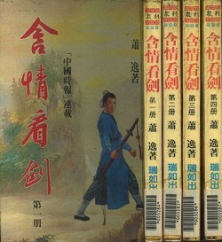
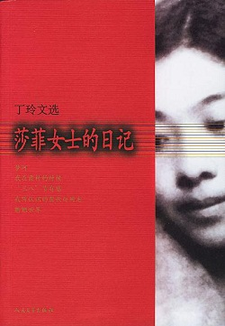

好書更新 2013年12月
 唐魯孫《天下味》
唐魯孫《天下味》Jack製作 12/6 (236K) (智囊)
湯姆‧克蘭西【總統命令】Damon製作 12/6 (1455K) (小說)
新田次郎【武田信玄】tiknuhc製作 12/6 (1580K) (歷史)
莫言《紅高粱家族》A Yung製作 12/6 (564K) (小說)
李存葆【高山下的花環】doomsday製作 12/6 (148K) (歷史)
柳殘陽【傷情箭】doomsday製作 12/6 (115K) (武俠)
溫瑞安【大俠傳奇】張燈製作 12/6 (618K) (武俠)
司馬翎【纖手馭龍】Simon製作 12/6 (1485K) (武俠)
諸葛青雲《金手書生》嘉明製作 12/6 (809K) (武俠)
獨孤紅【孤騎】嘉明製作 12/6 (1091K) (武俠)
獨孤紅【刀神】嘉明製作 12/6 (733K) (武俠)
琳達．戴維斯《毒蛇窩》sue1289製作 12/6 (447K) (小說)
皮埃爾．洛蒂《冰島漁夫》sue1289製作 12/6 (205K) (小說)
麥克．克萊頓《剛果驚魂》sue1289製作 12/6 (366K) (小說)
顯克微支等《世界經典小小說選》sue1289製作 12/6 (111K) (小說)
海明威《海明威短篇小說選》sue1289製作 12/6 (342K) (小說)
馬克．吐溫《馬克．吐溫短篇小說集》sue1289製作 12/6 (268K) (小說)
馬克．吐溫《馬克．吐溫中篇小說集》sue1289製作 12/6 (193K) (小說)
馬克．吐溫《苦行記》sue1289製作 12/6 (404K) (小說)
馬克．吐溫《湯姆歷險記》sue1289製作 12/6 (274K) (小說)
威廉德．普萊斯《智鬥猛獸》sue1289製作 12/6 (190K) (小說)
威廉德．普萊斯《北極探險》sue1289製作 12/6 (195K) (小說)
赤川次郎《三色貓頭條新聞》邱應琦製作 12/6 (160K) (懸疑)
赤川次郎《三色貓殺人展覽會》邱應琦製作 12/6 (110K) (懸疑)
赤川次郎《三色貓恐怖館》邱應琦製作 12/6 (244K) (懸疑)
赤川次郎《三色貓騎士道》邱應琦製作 12/6 (228K) (懸疑)
赤川次郎《三色貓奇異箱》邱應琦製作 12/6 (174K) (懸疑)
赤川次郎《三色貓聖誕節》邱應琦製作 12/6 (179K) (懸疑)
赤川次郎《東西南北殺人事件》邱應琦製作 12/6 (213K) (懸疑)
倪匡【藍血人】Lin Lee校正 12/6 (404K) (世紀百強 94; 衛斯理 6-7, 奇幻)
倪匡【沉船】doomsday校正 12/6 (174K) (衛斯理 12, 奇幻)
倪匡【地心洪爐】doomsday校正 12/6 (184K) (衛斯理 13, 奇幻)
倪匡【支離人】doomsday校正 12/6 (248K) (衛斯理 18, 奇幻)
倪匡【原子空間】doomsday校正 12/6 (201K) (衛斯理 31, 奇幻)
倪匡【紅月亮】doomsday校正 12/6 (189K) (衛斯理 32, 奇幻)
倪匡【尋夢】guinness校正 12/6 (244K) (衛斯理 45, 奇幻)
倪匡【在數難逃】doomsday校正 12/6 (166K) (衛斯理 80, 奇幻)
倪匡【本性難移】doomsday校正 12/6 (164K) (衛斯理 115, 奇幻)
唐魯孫【中國吃】Laohou勘誤 12/6 (185K) (智囊)
唐魯孫【酸甜苦辣鹹】mPDB勘誤 12/6 (172K) (智囊)
莫仁《星戰英雄》雷克斯郝勘誤 12/6 (1193K) (奇幻)
黃易【尋秦記六】寶寶勘誤 12/6 (650K) (武俠)
魯迅【吶喊】Nightfifty勘誤 12/6 (172K) (世紀百強 1)
莫言《豐乳肥臀》A Yung勘誤 12/6 (943K) (小說)
莫言《四十一炮》 A Yung勘誤 12/6 (548K) (小說)
莫言《檀香刑》A Yung勘誤 12/6 (577K) (小說)
莫言【蛙】A Yung勘誤 12/6 (406K) (小說)
麥克．克萊頓【火車大劫案】mPDB勘誤 12/6 (303K) (小說)
東野圭吾【浪花少年偵探團】ansa、Joy勘誤 12/6 (226K) (懸疑)
東野圭吾【假面飯店】Joy勘誤 12/6 (410K) (懸疑)
東野圭吾【假面山莊殺人事件】Joy勘誤 12/6 (219K) (懸疑)
東野圭吾【再見了，忍老師】Joy勘誤 12/6 (227K) (懸疑)
宮部美幸【魔術的耳語】Joy勘誤 12/6 (324K) (懸疑)
宮部美幸【火車】Joy、Qb勘誤 12/6 (470K) (懸疑)
米涅．渥特絲《女雕刻家》Joy勘誤 12/6 (381K) (懸疑)
T．W．哈德《
木乃伊七號》Joy勘誤 12/6 (183K) (懸疑)
葉靈鳳【未完的懺悔錄】Joy勘誤 12/6 (133K) (小說)
蒙曼【蒙曼說唐：武則天】Joy勘誤 12/6 (515K) (歷史)
赤川次郎《幽靈列車》Eirene勘誤 12/6 (256K) (懸疑)
赤川次郎《幽靈候補生》Eirene勘誤 12/6 (155K) (懸疑)
赤川次郎《幽靈同好會》Eirene勘誤 12/6 (228K) (懸疑)
赤川次郎《三色貓怪談》Eirene勘誤 12/6 (262K) (懸疑)
金庸【笑傲江湖一】章雪曼勘誤 12/6 (515K) (武俠)
金庸【笑傲江湖二】章雪曼勘誤 12/6 (509K) (武俠)
金庸【笑傲江湖三】章雪曼勘誤 12/6 (490K) (武俠)
金庸【笑傲江湖四】章雪曼勘誤 12/6 (508K) (武俠)
梁羽生《冰川天女傳》James勘誤 12/6 (985K) (武俠)
梁羽生【冰魄寒光劍】James勘誤 12/6 (229K) (武俠)
梁羽生【雲海玉弓緣】James勘誤 12/6 (1230K) (武俠)
梁羽生《冰河洗劍錄》James勘誤 12/6 (1330K) (武俠)
梁羽生【風雷震九州】James勘誤 12/6 (1288K) (武俠)
梁羽生【俠骨丹心】James勘誤 12/6 (1177K) (武俠)
古龍《七種武器之孔雀翎》gasbomb勘誤 12/6 (154K) (武俠)
古龍《碧玉刀》gasbomb勘誤 12/6 (195K) (武俠)
倪匡《鑽石花》Lin Lee勘誤 12/6 (270K) (衛斯理 1, 奇幻)
倪匡《地底奇人》Lin Lee、doomsday勘誤 12/6 (435K) (衛斯理 2-3, 奇幻)
倪匡《奇門》Lin Lee勘誤 12/6 (181K) (衛斯理 9, 奇幻)
倪匡《透明光》Lin Lee勘誤 12/6 (322K) (衛斯理 10-11, 奇幻)
倪匡《狐變》Lin Lee勘誤 12/6 (173K) (衛斯理 23, 奇幻)
倪匡《影子》Lin Lee勘誤 12/6 (191K) (衛斯理 36, 奇幻)
倪匡《木炭》Lin Lee勘誤 12/6 (268K) (衛斯理 39, 奇幻)
倪匡《玩具》Lin Lee勘誤 12/6 (242K) (衛斯理 44, 奇幻)
倪匡《洞天》Lin Lee勘誤 12/6 (208K) (衛斯理 53, 奇幻)
倪匡《活俑》Lin Lee勘誤 12/6 (215K) (衛斯理 54, 奇幻)
倪匡《命運》Lin Lee勘誤 12/6 (182K) (衛斯理 56, 奇幻)
好書更新 2013年11月
赤川次郎《三色貓怪談》邱應琦製作 11/15 (262K) (懸疑)
赤川次郎《三色貓死亡樂章》邱應琦製作 11/15 (217K) (懸疑)
赤川次郎《三色貓私奔》邱應琦製作 11/15 (216K)
赤川次郎《打發時間的殺人遊戲》邱應琦製作 11/15 (269K)
赤川次郎《玩得過火的殺人遊戲》邱應琦製作 11/15 (242K)
獨孤紅【俠骨頌】嘉明製作 11/15 (790K) (武俠)
倪匡【後備】doomsday校正 11/15 (193K) Lin Lee勘誤 11/15 (衛斯理 46, 奇幻)
倪匡【轉世暗號】doomsday校正 11/15 (166K) (衛斯理 78, 奇幻)
倪匡【暗號之二】doomsday校正 11/15 (165K) (衛斯理 79, 奇幻)
倪匡【神仙】 guinness校正 11/15 (225K) (衛斯理 51, 奇幻)
宮部美幸【火車】ansa製作 11/15 (470K) (懸疑)
威廉德．普萊斯《追蹤食人獅》sue1289製作 11/15 (156K) (小說)
威廉德．普萊斯《智擒大猩猩》sue1289製作 11/15 (180K) (小說)
威廉德．普萊斯《神祕海底城》sue1289製作 11/15 (204K) (小說)
威廉德．普萊斯《闖入食人國》sue1289製作 11/15 (191K) (小說)
賈德諾《金礦之謎》李鳳子勘誤 11/15 (249K) (梅森探案集 7, 懸疑)
賈德諾《憤怒的證人》李鳳子勘誤 11/15 (24K) (梅森探案集 11, 懸疑)
賈德諾《逃屍案》李鳳子勘誤 11/15 (237K) (梅森探案集 14, 懸疑)
賈德諾《受騙的模特兒》李鳳子勘誤 11/15 (234K) (梅森探案集 15, 懸疑)
賈德諾《孿生女》李鳳子勘誤 11/15 (223K) (梅森探案集 16, 懸疑)
賈德諾《漂亮的女招待》李鳳子勘誤 11/15 (275K) (梅森探案集 17, 懸疑)
東野圭吾【放學後】吹笛人勘誤 11/15 (283K) (懸疑)
張愛玲《赤地之戀》allen勘誤 11/15 (271K) (小說)
白先勇《孽子》YUKI勘誤 11/15 (443K) (小說)
倪匡《六指琴魔》Alex Fung勘誤 11/15 (1114K) (武俠)
倪匡《飛焰》寶寶勘誤 11/15 (171K) (羅開 9, 奇幻)
倪匡《死結》寶寶勘誤 11/15 (171K) (羅開 12, 奇幻)
倪匡《解開死結》寶寶勘誤 11/15 (172K) (羅開 13, 奇幻)
倪匡《快活秘方》寶寶勘誤 11/15 (196K) (原振俠 21, 奇幻)
倪匡《宇宙殺手》寶寶勘誤 11/15 (161K) (原振俠 31, 奇幻)
倪匡《訪客》Lin Lee勘誤 11/15 (187K) (衛斯理 21, 奇幻)
倪匡《換頭記》Lin Lee勘誤 11/15 (157K) (衛斯理 30, 奇幻)
倪匡《魔磁》Lin Lee勘誤 11/15 (151K) (衛斯理 35, 奇幻)
司馬翎【檀車俠影】Simon勘誤 11/15 (1191K) (武俠)
莫言【蛙】A Yung勘誤 11/15 (406K) (小說)
赤川次郎《三色貓推理》邱應琦製作 11/8 (196K) (懸疑)
赤川次郎《三色貓追蹤》邱應琦製作 11/8 (203K) (懸疑)
威廉德．普萊斯《惡戰殺人鯨》sue1289製作 11/8 (190K) (小說)
威廉德．普萊斯《非洲歷險》sue1289製作 11/8 (166K) (小說)
威廉德．普萊斯《巧捕白象》sue1289製作 11/8 (176K) (小說)
威廉德．普萊斯《獵場剿匪》sue1289製作 11/8 (159K) (小說)
倪匡【不死藥】doomsday校正 11/8 (179K) (衛斯理 16, 奇幻)
倪匡【搜靈】doomsday校正 11/8 (229K) (衛斯理 49, 奇幻)
倪匡【追龍】doomsday校正 11/8 (199K) (衛斯理 52, 奇幻)
倪匡【異寶】doomsday校正 11/8 (183K) (衛斯理 57, 奇幻)
溫瑞安【談亭會】張燈製作 11/8 (126K) (武俠)
司馬翎【檀車俠影】Simon製作 11/8 (1191K) (武俠)
獨孤紅【龍爭虎鬥】嘉明製作 11/8 (762K) (武俠)
獨孤紅《玉翎雕》嘉明製作 11/8 (1174K) (武俠)
陳青雲【刀劍金鷹】邱應琦勘誤補缺 11/8 (464K) (武俠)
莫理士‧盧布朗《水晶瓶塞》邱應琦勘誤 11/8 (295K) (懸疑)
宮部美幸【魔術的耳語】Vivian、Dunn勘誤 11/8 (324K) (懸疑)
張愛玲《赤地之戀》Shao Baoqing勘誤 11/8 (271K) (小說)
倪匡《鬼子》Lin Lee勘誤 11/8 (194K) (衛斯理 33, 奇幻)
倪匡《新年》Lin Lee勘誤 11/8 (182K) (衛斯理 34, 奇幻)
倪匡《眼睛》Lin Lee勘誤 11/8 (213K) (衛斯理 38, 奇幻)
阿城【威尼斯日記】guinness製作 11/1 (88K) (智囊)
赤川次郎《赤川自傳》邱應琦製作 11/1 (38K) (懸疑)
赤川次郎《幽靈列車》邱應琦製作 11/1 (256K) (懸疑)
赤川次郎《幽靈候補生》邱應琦製作 11/1 (155K) (懸疑)
赤川次郎《幽靈同好會》邱應琦製作 11/1 (228K) (懸疑)
威廉德．普萊斯《亞馬遜探險》sue1289製作 11/1 (238K) (小說)
威廉德．普萊斯《南海奇遇》sue1289製作 11/1 (187K) (小說)
威廉德．普萊斯《海底尋寶》sue1289製作 11/1 (179K) (小說)
威廉德．普萊斯《勇探火山口》sue1289製作 11/1 (158K) (小說)
倪匡【天外金球】doomsday校正 11/1 (166K) (衛斯理 25)
溫瑞安【開謝花】張燈製作 11/1 (136K) (武俠)
獨孤紅【滿江紅】嘉明製作 11/1 (1371K) (武俠)
莫言《四十一炮》A Yung勘誤 11/1 (548K) (小說)
莫言《檀香刑》A Yung補缺勘誤 11/1 (577K) (小說)
莫言《豐乳肥臀》A Yung勘誤 11/1 (948K) (小說)
倪匡【倪匡傳奇】A Yung勘誤 11/1 (110K) (奇幻)
倪匡【天外桃源】A Yung勘誤 11/1 (91K) (奇幻)
東野圭吾【再見了，忍老師】gggsssgs勘誤 11/1 (227K) (懸疑)
黃鷹【無翼蝙蝠】Peter Ko補前言 11/1 (506K) (武俠)
倪匡《支離人》Lin Lee勘誤 11/1 (208K) (衛斯理 18, 奇幻)
倪匡《連鎖》Lin Lee勘誤 11/1 (368K) (衛斯理 40-41, 奇幻)
倪匡《第二種人》Lin Lee勘誤 11/1 (259K) (衛斯理 47, 奇幻)
好書更新 2013年10月
倪匡【老貓】doomsday校正 10/25 (158K) Lin Lee勘誤 10/25 (衛斯理 24)
溫瑞安【大陣仗】張燈製作 10/25 (129K) (武俠)
傑克‧倫敦《傑克倫敦短篇小說選一》sue1289製作 10/25 (385K) (小說)
傑克‧倫敦《傑克倫敦短篇小說選二》sue1289製作 10/25 (183K) (小說)
比徹斯托夫人《湯姆叔叔的小屋》sue1289製作 10/25 (713K) (小說)
東野圭吾【再見了，忍老師】tiknuhc製作 10/25 (227K) (懸疑)
東野圭吾【浪花少年偵探團】tiknuhc製作 10/25 (226K) (懸疑)
東方玉【紅線俠侶】嘉明製作 10/25 (1029K) (武俠)
劉鶚《老殘遊記》sue1289勘誤 10/25 (224K) (世紀百強 10)
朱西甯【鐵漿】sue1289勘誤 10/25 (20K) (世紀百強 53)
東野圭吾【麒麟之翼】Joy勘誤 10/25 (280K) (懸疑)
東野圭吾【偵探伽利略】Sylvia勘誤 10/25 (244K) (懸疑)
東野圭吾【預知夢】Sylvia勘誤 10/25 (215K) (懸疑)
梁羽生【江湖三女俠】James勘誤 10/25 (1220K) (武俠)
諸葛青雲【紫電青霜】Peter Ko補缺 10/25 (946K) (武俠)
譚恩美《灶神之妻》水木清華勘誤 10/25 (564K) (小說)
柏楊【中國人史綱】doomsday勘誤 10/25 (1113K) (歷史)
白崇禧【白崇禧先生訪問紀錄．上】Laohou勘誤 10/25 (872K) (歷史)
莫言《檀香刑》A Yung勘誤 10/25 (565K) (小說)
倪匡《仙境》Lin Lee勘誤 10/25 (208K) (衛斯理 20, 奇幻)
倪匡《蠱惑》Lin Lee勘誤 10/25 (218K) (衛斯理 22, 奇幻)
倪匡《筆友》Lin Lee勘誤 10/25 (202K) (衛斯理 27, 奇幻)
倪匡《古聲》Lin Lee勘誤 10/25 (171K) (衛斯理 29, 奇幻)
倪匡《原子空間》Lin Lee勘誤 10/25 (201K) (衛斯理 31, 奇幻)
倪匡《紅月亮》Lin Lee勘誤 10/25 (189K) (衛斯理 32, 奇幻)
倪匡《搜靈》Lin Lee勘誤 10/25 (226K) (衛斯理 49, 奇幻)
倪匡《茫點》Lin Lee勘誤 10/25 (272K) (衛斯理 50, 奇幻)
倪匡《異寶》Lin Lee勘誤 10/25 (183K) (衛斯理 57, 奇幻)
 弗．福塞斯《豺狼的日子》
弗．福塞斯《豺狼的日子》sue1289製作 10/18 (482K) (懸疑)
白樺【遠方有個女兒國】guinness製作 10/18 (420K) (小說)
慕容美【不了恩怨不了情】嘉明製作 10/18 (932K) (武俠)
溫瑞安【大宗師三：養生主】邱應琦製作 10/18 (236K) (武俠)
溫瑞安【大宗師四：人間世】邱應琦製作 10/18 (255K) (武俠)
東野圭吾【假面山莊殺人事件】tiknuhc製作 10/18 (219K) (懸疑)
司馬遼太郎【鎌倉戰神源義經】tiknuhc製作 10/18 (741K) (歷史)
獨孤紅《紫鳳釵》嘉明製作 10/18 (848K) (武俠)
倪匡《六指琴魔》Alex Fung勘誤 10/18 (1114K) (武俠)
天樹征丸《邪宗館殺人事件》小瑋勘誤 10/18 (382K) (金田一 8, 懸疑)
溫瑞安【賴藥兒】敖先榮勘誤 10/18 (200K) (布衣神相 4, 武俠)
賈德諾《寶石蝴蝶》Gilbert勘誤 10/18 (86K) (懸疑)
阿嘉莎．克莉絲蒂《十三個難題》Gilbert勘誤 10/18 (253K) (懸疑)
黃易《星際浪子》小瑋勘誤 10/18 (1334K) (奇幻)
古龍【楚留香傳奇‧畫眉鳥】Anthony勘誤 10/18 (445K) (世紀百強 84, 武俠)
司馬遼太郎《司馬遼太郎短篇選》Joy勘誤 10/18(714K) (歷史)
溫瑞安【大宗師一：血河車】邱應琦製作 10/11 (264K) (武俠)
溫瑞安【大宗師二：逍遙遊】邱應琦製作 10/11 (254K) (武俠)
葉靈鳳【未完的懺悔錄】guinness製作 10/11 (133K) (小說)
獨孤紅【名劍明珠】嘉明製作 10/11 (929K) (武俠)
李伯元《官場現形記》蔡佩伶勘誤 10/11 (1286K) (世紀百強 15)
吳趼人《二十年目睹之怪現狀》蔡佩伶勘誤 10/11 (1088K) (世紀百強 95)
梁羽生【七劍下天山】James勘誤 10/11 (803K) (武俠)
天樹征丸《上海魚人傳說殺人事件》小瑋勘誤 10/11 (178K) (金田一 5, 懸疑)
天樹征丸《雷祭殺人事件》小瑋勘誤 10/11 (104K) (金田一 6, 懸疑)
天樹征丸《殺戮的深藍》小瑋勘誤 10/11 (382K) (金田一 7, 懸疑)
倪匡【少年衛斯理】A Yung勘誤 10/11 (138K) (少年衛斯理 1, 奇幻)
倪匡【天外桃源】A Yung勘誤 10/11 (91K) (少年衛斯理 2, 奇幻)
吉川英治【源賴朝】tiknuhc製作 10/4 (520K) (歷史)
馮驥才【神鞭】guinness製作 10/4 (107K) (歷史)
獨孤紅【江湖人】嘉明製作 10/4 (929K) (武俠)
獨孤紅【帝疆風雲】嘉明製作 10/4 (539K) (武俠)
獨孤紅【江湖奇士】嘉明製作 10/4 (611K) (武俠)
金城陽三郎、天樹征丸《歌劇院新事件》小瑋勘誤 10/4 (183K) (金田一 1, 懸疑)
金城陽三郎、天樹征丸《幽靈客船殺人事件》小瑋勘誤 10/4 (179K) (金田一 2, 懸疑)
金城陽三郎、天樹征丸《鬼火島殺人事件》小瑋勘誤 10/4 (181K) (金田一 3, 懸疑)
金城陽三郎、天樹征丸《電腦山莊殺人事件》小瑋勘誤 10/4 (193K) (金田一 4, 懸疑)
獨孤紅【劍客】Nightfifty勘誤 10/4 (1068K) (武俠)
溫瑞安【落花劍影】敖先榮勘誤 10/4 (202K) (布衣神相 5, 武俠)
艾勒里‧昆恩《Y之悲劇》Bee勘誤 10/4 (367K) (懸疑)
東野圭吾【劫持白銀】Joy勘誤 10/4 (358K) (懸疑)
湊佳苗【往復書簡】Joy勘誤 10/4 (205K) (懸疑)
莫言《豐乳肥臀》A Yung勘誤 10/4 (943K) (小說)
倪匡《蜂雲》Lin Lee勘誤 10/4 (232K) (衛斯理 8, 奇幻)
倪匡《叢林之神》Lin Lee勘誤 10/4 (177K) (衛斯理 15, 奇幻)
倪匡《屍變》Lin Lee勘誤 10/4 (180K) (衛斯理 26, 奇幻)
倪匡《大廈》Lin Lee勘誤 10/4 (191K) (衛斯理 28, 奇幻)
倪匡《犀照》Lin Lee勘誤 10/4 (225K) (衛斯理 55, 奇幻)
好書更新 2013年9月
費蒙【駱駝奇案】分工製作 9/27 (406K)
松本清張【單身女子公寓】guinness校正 9/27 (129K) (懸疑)
獨孤紅【丹心錄】嘉明製作 9/27 (1020K) (武俠)
獨孤紅【男子漢】嘉明製作 9/27 (1021K) (武俠)
獨孤紅【豪傑血】嘉明製作 9/27 (842K) (武俠)
金庸【鹿鼎記三】Fong、mark、士兵勘誤 9/27 (509K) (世紀百強 31, 武俠)
金庸【鹿鼎記四】Fong、mark、士兵勘誤 9/27 (519K) (世紀百強 31, 武俠)
金庸【鹿鼎記五】Fong、mark、士兵勘誤 9/27 (526K) (世紀百強 31, 武俠)
溫瑞安【天威】敖先榮勘誤 9/27 (180K) (布衣神相 3, 武俠)
倪匡《沉船》Lionel勘誤 9/27 (174K) (衛斯理 12, 奇幻)
倪匡《規律》Lionel勘誤 9/27 (179K) (衛斯理 17, 奇幻)
倪匡《貝殼》Lionel勘誤 9/27 (190K) (衛斯理 19, 奇幻)
袁騰飛【歷史是個什麼玩意兒】tiknuhc製作 9/20 (753K) (歷史)
錢穆【中國歷史研究法】gu校正 9/20 (157K) (歷史)
水橋文美江【東京仙履奇緣】邱應琦製作 9/20 (193K) (言情)
倪匡【地圖】Lin Lee校正 9/20 (162K) (衛斯理 14, 奇幻)
倪匡【迷藏】Lin Lee校正 9/20 (207K) (衛斯理 42, 奇幻)
倪匡【天書】Lin Lee校正 9/20 (230K) (衛斯理 43, 奇幻)
溫瑞安【唐方一戰】張燈製作 9/20 (144K) (武俠)
杏林子【一路逆風】guinness製作 9/20 (120K) (智囊)
曹若冰【金劍寒梅】嘉明製作 9/20 (798K) (武俠)
范‧達因《格林家命案》Vivian勘誤 9/20 (346K) (懸疑)
范‧達因《主教謀殺案》Vivian勘誤 9/20 (330K) (懸疑)
內爾森‧德米勒《將軍的女兒》Vivian勘誤 9/20 (498K) (懸疑)
東野圭吾【劫持白銀】Vivian勘誤 9/20 (358K) (懸疑)
東野圭吾【以眨眼乾杯】Vivian勘誤 9/20 (225K) (懸疑)
賈德諾《寶石蝴蝶》Vivian勘誤 9/20 (86K) (懸疑)
賈德諾《失蹤》Vivian勘誤 9/20 (64K) (懸疑)
東野圭吾【黎明破曉的街道】Bee勘誤 9/20 (304K) (懸疑)
溫瑞安【葉夢色】敖先榮勘誤 9/20 (175K) (布衣神相 2, 武俠)
慕容美【秋水芙蓉】敖先榮勘誤 9/20 (1091K) (武俠)
溫瑞安【碎夢刀】敖先榮勘誤 9/20 (138K) (武俠)
黃易【大唐雙龍傳六】Elaine Chang勘誤 9/20 (1006K) (武俠)
黃易【大唐雙龍傳七】Elaine Chang勘誤 9/20 (1021K) (武俠)
黃易【大唐雙龍傳八】Elaine Chang勘誤 9/20 (896K) (武俠)
林清玄《林清玄散文集》young勘誤 9/20 (481K) (智囊)
金庸【鹿鼎記二】Fong、mark勘誤 9/20 (482K) (世紀百強 31, 武俠)
梁羽生【白髮魔女傳】James勘誤 9/20 (815K) (世紀百強 87, 武俠)
梁羽生【塞外奇俠傳】James勘誤 9/20 (189K) (武俠)

金庸【神鵰俠侶三】CE校正 9/13 (488K) (武俠)
倪匡【少年衛斯理】邱應琦製作 9/13 (138K) (少年衛斯理 1, 奇幻)
倪匡【天外桃源】邱應琦製作 9/13 (91K) (少年衛斯理 2, 奇幻)
溫瑞安【碎夢刀】張燈製作 9/13 (138K) Thomas勘誤 9/13 (武俠)
東野圭吾【劫持白銀】tiknuhc製作 9/13 (205K) (懸疑)
蕭逸【含情看劍】guinness製作 9/13 (918K) (武俠)
獨孤紅【菩薩蠻】嘉明製作 9/13 (906K) (武俠)
金庸【天龍八部五】敖先榮勘誤 9/13 (496K) (武俠)
金庸【鹿鼎記一】Fong、mark勘誤 9/13 (493K) (世紀百強 31, 武俠)
莫言《豐乳肥臀》A Yung勘誤 9/13 (943K) (小說)
劉以鬯【對倒】A Yung勘誤 9/13 (39K) (小說)
梁羽生【聯劍風雲錄】James勘誤 9/13 (960K) (武俠)
梁羽生【廣陵劍】James勘誤 9/13 (1532K) (武俠)
森村誠一《高層的死角》Bee勘誤 9/13 (263K) (懸疑)
宮部美幸【魔術的耳語】伊果勘誤 9/13 (324K) (懸疑)
宮部美幸【獵捕史奈克】Joy勘誤 9/13 (302K) (懸疑)
東野圭吾【真夏方程式】Joy勘誤 9/13 (388K) (懸疑)
賈德諾【逼出來的真相】Vivian勘誤 9/13 (190K) (懸疑)
艾勒里‧昆恩《Y之悲劇》Vivian勘誤 9/13 (406K) (懸疑)
曾樸【孽海花】Fong校正 9/6 (515K) (世紀百強 32)
林太乙【金盤街】guinness製作 9/6 (220K) (小說)
湊佳苗【往復書簡】tiknuhc製作 9/6 (205K) (懸疑)
雲中岳【烈火情挑】嘉明製作 9/6 (834K) (武俠)
慕容美【秋水芙蓉】嘉明製作 9/6 (1091K) (武俠)
森村誠一《高層的死角》Vivian勘誤 9/6 (263K) (懸疑)
橫溝正史《鷹巢海角慘案》Vivian勘誤 9/6 (145K) (懸疑)
東野圭吾【單戀】Vivian勘誤 9/6 (517K) (懸疑)
東野圭吾【湖邊凶殺案】Vivian勘誤 9/6 (208K) (懸疑)
東野圭吾【怪笑小說】Vivian勘誤 9/6 (208K) (懸疑)
東野圭吾【毒笑小說】Vivian勘誤 9/6 (264K) (懸疑)
東野圭吾【黑笑小說】Vivian勘誤 9/6 (245K) (懸疑)
湊佳苗【境遇】Vivian勘誤 9/6 (169K) (懸疑)
內田康夫《他殺的疑惑》Vivian勘誤 9/6 (42K) (懸疑)
艾勒里‧昆恩《X之悲劇》Vivian勘誤 9/6 (406K) (懸疑)
東野圭吾【白夜行】Evan勘誤 9/6 (734K) (懸疑)
阿嘉莎．克莉絲蒂《十三個難題》Bee勘誤 9/6 (253K) (懸疑)
古龍《憤怒的小馬》邱應琦勘誤 9/6 (230K) (武俠)
古龍【七殺手】邱應琦勘誤 9/6 (199K) (武俠)
倪匡《須彌芥子》邱應琦勘誤 9/6 (161K) (衛斯理 129, 奇幻)
唐德剛【毛澤東專政始末】陳白乾勘誤 9/6 (343K) (歷史)
好書更新 2013年8月
梁羽生【大唐游俠傳】邱應琦校正 8/30 (942K) (武俠)
湊佳苗【境遇】tiknuhc製作 8/30 (169K) (懸疑)
憶文【白玉崙】敖先榮勘誤 8/30 (335K) (武俠)
司馬紫煙/臥龍生/獨孤紅/諸葛青雲【龍虎風雲】敖先榮勘誤 8/30 (315K) (武俠)
溫瑞安【殺人的心跳】敖先榮勘誤 8/30 (134K) (布衣神相 1, 武俠)
宮部美幸【幻色江戶曆】heloisec勘誤 8/30 (230K) (懸疑)
托瑪斯‧曼【魂斷威尼斯】Joy勘誤 8/30 (97K) (小說)
李開元【秦謎：秦始皇的祕密】Joy勘誤 8/30 (363K) (歷史)
李漁【無聲戲】Joy勘誤 8/30 (267K) (小說)
陳若曦【二胡】Joy勘誤 8/30 (309K) (小說)
東野圭吾【使命與心的極限】Joy勘誤 8/30 (346K) (懸疑)
東野圭吾【布魯特斯的心臟】Joy勘誤 8/30 (294K) (懸疑)
柯南‧道爾《福爾摩斯三．歸來記》gumshoe勘誤 8/30 (391K) (懸疑)
柯南‧道爾《福爾摩斯四．歸來記》gumshoe勘誤 8/30 (295K) (懸疑)
梁羽生【萍蹤俠影錄上】Vivian勘誤 8/30 (419K) (武俠)
梁羽生【萍蹤俠影錄下】Vivian勘誤 8/30 (408K) (武俠)
朱少麟【傷心咖啡店之歌】Vivian勘誤 8/30 (490K) (小說)
東野圭吾【天空之蜂】Vivian勘誤 8/30 (485K) (懸疑)
松本清張《隔牆有眼》Vivian勘誤 8/30 (321K) (懸疑)
湊佳苗【贖罪】Vivian勘誤 8/30 (204K) (懸疑)
赤川次郎【杜鵑窩圓舞曲】Vivian勘誤 8/30 (191K) (懸疑)
童恩正【雪山魔笛】Vivian勘誤 8/30 (202K) (奇幻)
林海音【燭芯】Vivian勘誤 8/30 (212K) (小說)
倪匡《火鳳》skyhawk勘誤 8/30 (171K) (羅開 8, 奇幻)
倪匡《身外化身》邱應琦勘誤 8/30 (160K) (衛斯理 126, 奇幻)
倪匡《非常遭遇》邱應琦勘誤 8/30 (160K) (衛斯理 127, 奇幻)
倪匡《一個地方》邱應琦勘誤 8/30 (160K) (衛斯理 128, 奇幻)
九把刀《殺手，流離尋岸的花》mPDB勘誤 8/30 (218K) (小說)
A.S. Neill【夏山學校】Robert Suen製作 8/23 (370K) (智囊)
湊佳苗【贖罪】tiknuhc製作 8/23 (204K) (懸疑)
湊佳苗【為了Ｎ】tiknuhc製作 8/23 (231K) (懸疑)
湊佳苗【少女】tiknuhc製作 8/23 (213K) (懸疑)
宮部美幸【無止境的殺人】guinness製作 8/23 (懸疑)
慕容美【留春谷】嘉明製作 8/23 (809K) (武俠)
慕容美【金龍寶典】嘉明製作 8/23 (1088K) (武俠)
梁羽生【散花女俠】James勘誤 8/23 (907K) (武俠)
海明威【老人與海】菩提樹勘誤 8/23 (105K) (小說)
廖輝英【油麻菜籽】菩提樹勘誤 8/23 (29K) (小說)
東野圭吾【流星之絆】Bee勘誤 8/23 (439K) (懸疑)
東野圭吾【假面飯店】Bee勘誤 8/23 (410K) (懸疑)
孫皓暉《大秦帝國一》mark勘誤 8/23 (1390K) (歷史)
孫皓暉《大秦帝國二》khaisuan勘誤 8/23 (1387K) (歷史)
蒙曼【蒙曼說唐：武則天】tiknuhc勘誤 8/23 (503K) (歷史)
古龍【流星蝴蝶劍】敖先榮勘誤 8/23 (645K) (武俠)
獨孤紅【武林春秋】敖先榮勘誤 8/23 (859K) (武俠)
古龍《七種武器之孔雀翎》邱應琦勘誤 8/23 (154K) (武俠)
古龍《七種武器之多情環》邱應琦勘誤 8/23 (171K) (武俠)
古龍《霸王槍》邱應琦勘誤 8/23 (283K) (武俠)
古龍【離別鉤】邱應琦勘誤 8/23 (159K) (武俠)
倪匡《轉世暗號》邱應琦勘誤 8/23 (166K) (衛斯理 78, 奇幻)
倪匡《暗號之二》邱應琦勘誤 8/23 (165K) (衛斯理 79, 奇幻)
倪匡《不死藥》若詩勘誤 8/23 (179K) (衛斯理 16, 奇幻)
倪匡《規律》若詩勘誤 8/23 (179K) (衛斯理 17, 奇幻)
倪匡《巨龍》skyhawk勘誤 8/23 (174K) (羅開 5, 奇幻)
倪匡《蜂后》skyhawk勘誤 8/23 (172K) (羅開 7, 奇幻)
賈德諾《宛如塘鵝》Vivian勘誤 8/23 (61K) (懸疑)
橫溝正史《犬神家一族》Vivian勘誤 8/23 (296K) (懸疑)
黃易【大唐雙龍傳五】Elaine Chang勘誤 8/23 (991K) (武俠)
黃易【大唐雙龍傳六】Elaine Chang勘誤 8/23 (1006K) (武俠)
梁羽生【七劍下天山】邱應琦校正 8/16 (803K) (武俠)
東野圭吾【天空之蜂】tiknuhc製作 8/16 (485K) (懸疑)
森村誠一【情人關係】guinness製作 8/16 (276K) (懸疑)
司馬紫煙/臥龍生/獨孤紅/諸葛青雲【龍虎風雲】嘉明製作 8/16 (315K) (武俠)
獨孤紅【鐵血柔情淚】嘉明製作 8/16 (1088K) (武俠)
臥龍生【絳雪玄霜】敖先榮勘誤 8/16 (1807K) (武俠)
黃鷹【七夜勾魂】敖先榮勘誤 8/16 (151K) (武俠)
于晴《探花郎》Matilda勘誤 8/16 (187K) (言情)
于晴《浪龍戲鳳》Matilda勘誤 8/16 (191K) (言情)
于晴《金鎖姻緣》Matilda勘誤 8/16 (212K) (言情)
于晴《假如我給妳我的心》Matilda勘誤 8/16 (250K) (言情)
郁達夫【沉淪】noname勘誤 8/16 (44K) (世紀百強 16, 小說)
張愛玲【傳奇】Joy勘誤 8/16 (554K) (世紀百強 4,)
東野圭吾【湖邊凶殺案】Joy勘誤 8/16 (208K) (懸疑)
東野圭吾【預知夢】Joy勘誤 8/16 (215K) (懸疑)
東野圭吾【伽利略的苦惱】Joy勘誤 8/16 (279K) (懸疑)
東野圭吾【紅色手指】Joy勘誤 8/16 (232K) (懸疑)
東野圭吾【新參者】Joy勘誤 8/16 (332K) (懸疑)
東野圭吾【沉睡的森林】Vivian勘誤 8/16 (269K) (懸疑)
松本清張【黃色風土】Vivian勘誤 8/16 (373K) (懸疑)
湊佳苗【告白】Vivian勘誤 8/16 (188K) (懸疑)
倪匡《六指琴魔》Alex Fung勘誤 8/16 (1114K) (武俠)
倪匡《魔像》skyhawk勘誤 8/16 (173K) (羅開 3, 奇幻)
倪匡《怪頭》skyhawk勘誤 8/16 (173K) (羅開 4, 奇幻)
古龍《碧玉刀》邱應琦勘誤 8/16 (195K) (武俠)
梁羽生【萍蹤俠影錄上】James勘誤 8/16 (419K) (武俠)
梁羽生【萍蹤俠影錄下】James勘誤 8/16 (408K) (武俠)
蕭逸《笑解金刀》敖先榮勘誤 8/16 (577K) (武俠)
森村誠一【新幹線謀殺案】guinness製作 8/9 (276K)
鄭愁予【鄭愁予詩選集】eagle.rex製作 8/9 (97K) (智囊)
九把刀【那些年，我們一起追的女孩】菩提樹勘誤 8/9 (214K) (小說)
賈德諾《大猩猩殺人案》(270K) (梅森探案 13, 懸疑)
賈德諾《宛如塘鵝》劉禮維勘誤 8/9 (61K) (懸疑)
司馬翎【丹鳳針】Thomas勘誤 8/9 (1486K) (武俠)
古龍《楚留香傳奇‧午夜蘭花》路華勘誤 8/9 (239K) (武俠)
東野圭吾【真夏方程式】Bee勘誤 8/9 (388K) (懸疑)
東野圭吾【誰殺了她】Evan勘誤 8/9 (257K) (懸疑)
東野圭吾【假面飯店】Vivian勘誤 8/9 (410K) (懸疑)
橫溝正史《獄門島》Vivian勘誤 8/9 (270K) (懸疑)
東野圭吾【異變１３秒】Joy勘誤 8/9 (439K) (懸疑)
倪匡《頭髮》Joy勘誤 8/9 (272K) (衛斯理 37, 奇幻)
白先勇【台北人】Joy勘誤 8/9 (222K) (世紀百強 7, 小說)
倪匡《追龍》邱應琦勘誤 8/9 (199K) (衛斯理 52, 奇幻)
阿嘉莎．克莉絲蒂《十三個難題》eunice勘誤 8/9 (253K) (懸疑)
黃易《烏金血劍》敖先榮勘誤 8/9 (242K) (武俠)
夏樹靜子《來自死亡谷的女人》Vivian勘誤 8/9 (312K) (懸疑)
朱天心【擊壤歌】菩提樹勘誤 8/9 (248K) (小說)
宮部美幸【繼父】Vivian勘誤 8/9 (254K) (懸疑)
 費蒙【恐怖美人】
費蒙【恐怖美人】分工製作 8/2 (406K)
宮部美幸【繼父】guinness製作 8/2 (254K) (懸疑)
東野圭吾【假面飯店】tiknuhc製作 8/2 (410K) (懸疑)
倪匡【謎蹤】邱應琦校正 8/2 (204K) (衛斯理 62, 奇幻)
橫溝正史《犬神家一族》jackhsk勘誤 8/2 (296K) (懸疑)
橫溝正史《八墓村》jackhsk勘誤 8/2 (379K) (懸疑)
橫溝正史《惡魔的手毬歌》Vivian勘誤 8/2 (319K) (懸疑)
內田康夫《貴賓室的怪人．飛鳥號篇》Vivian勘誤 8/2 (314K) (懸疑)
東野圭吾【誰殺了她】Vivian勘誤 8/2 (257K) (懸疑)
湊佳苗【夜行觀覽車】Vivian勘誤 8/2 (324K) (懸疑)
九把刀【那些年，我們一起追的女孩】Vivian勘誤 8/2 (214K) (小說)
東野圭吾【真夏方程式】AK勘誤 8/2 (388K)
古龍【流星蝴蝶劍】James勘誤 8/2 (645K) (武俠)
玉翎燕【尺八無情簫】敖先榮勘誤 8/2 (595K) (武俠)
李開元【秦謎：秦始皇的祕密】謝易勳勘誤 8/2 (363K) (歷史)
孫皓暉《大秦帝國一》khaisuan勘誤 8/2 (1390K) (歷史)
賈德諾【逼出來的真相】劉禮維勘誤 8/2 (190K) (懸疑)
東野圭吾【沉睡的森林】Evan勘誤 8/2 (269K) (懸疑)
獨孤紅【武林春秋】菩提樹勘誤 8/2 (859K) (武俠)
黃易【大唐雙龍傳一】mPDB勘誤 8/2 (984K) (武俠)
黃易【大唐雙龍傳二】張乃仁勘誤 8/2 (944K) (武俠)
黃易【大唐雙龍傳三】mPDB勘誤 8/2 (949K) (武俠)
黃易【大唐雙龍傳四】gigicha、Elaine Chang勘誤 8/2 (991K) (武俠)
黃易【大唐雙龍傳五】mPDB勘誤 8/2 (991K) (武俠)
黃易【大唐雙龍傳六】mPDB勘誤 8/2 (1006K) (武俠)
黃易【大唐雙龍傳七】mPDB勘誤 8/2 (1021K) (武俠)
黃易【大唐雙龍傳八】詠君勘誤 8/2 (896K) (武俠)
倪匡《妖偶》skyhawk勘誤 8/2 (172K) (羅開 2, 奇幻)
倪匡《奇門》邱應琦勘誤 8/2 (181K) (衛斯理 9, 奇幻)
倪匡《透明光》若詩勘誤 8/2 (322K) (衛斯理 10-11, 奇幻)
倪匡《尋夢》邱應琦勘誤 8/2 (181K) (衛斯理 45, 奇幻)
倪匡《盜墓》邱應琦勘誤 8/2 (249K) (衛斯理 48, 奇幻)
好書更新 2013年7月
湊佳苗【夜行觀覽車】tiknuhc製作 7/26 (324K) (懸疑)
宮部美幸【魔術的耳語】guinness製作 7/26 (324K) (懸疑)
東野圭吾【誰殺了她】tiknuhc製作 7/26 (257K) (懸疑)
倪匡【瘟神】邱應琦校正 7/26 (206K) (衛斯理 63, 奇幻)
倪匡【招魂】邱應琦校正 7/26 (207K) (衛斯理 64, 奇幻)
倪匡【背叛】邱應琦校正 7/26 (208K) (衛斯理 65, 奇幻)
倪匡【鬼混】邱應琦校正 7/26 (208K) (衛斯理 66, 奇幻)
倪匡【報應】邱應琦校正 7/26 (206K) (衛斯理 67, 奇幻)
倪匡【魚人】Stephen Tsang勘誤 7/26 (179K) (奇幻)
倪匡《狐變》Joy勘誤 7/26 (173K) (衛斯理 23, 奇幻)
倪匡《黃金故事》邱應琦勘誤 7/26 (207K) (衛斯理 58C, 奇幻)
倪匡《病毒》邱應琦勘誤 7/26 (162K) (衛斯理 99, 奇幻)
倪匡《洪荒》邱應琦勘誤 7/26 (160K) (衛斯理 104, 奇幻)
宮部美幸【獵捕史奈克】Bee勘誤 7/26 (302K) (懸疑)
宮部美幸【幻色江戶曆】Vivian勘誤 7/26 (230K) (懸疑)
溫瑞安【刀疤記】Thomas勘誤 7/26 (203K) (布衣神相 6, 武俠)
古龍【楚留香傳奇‧血海飄香】敖先榮勘誤 7/26 (319K) (武俠)
倪匡《鬼鐘》skyhawk勘誤 7/26 (173K) (羅開 1, 奇幻)
橫溝正史《獄門島》jackhsk勘誤 7/26 (270K) (懸疑)
張小嫻《三個Ａ Ｃｕｐ的女人》jackhsk勘誤 7/26 (202K) (言情)
張小嫻《荷包裏的單人床》jackhsk勘誤 7/26 (132K) (言情)
吳啟泰《日落紫禁城》Joy勘誤 7/26 (1037K) (歷史)
林海音【燭芯】Joy勘誤 7/26 (212K) (小說)
東野圭吾【以眨眼乾杯】Joy勘誤 7/26 (225K) (懸疑)
東野圭吾【麒麟之翼】Evan勘誤 7/26 (280K) (懸疑)
東野圭吾【大概是最後的招呼】cenvii勘誤 7/26 (202K) (懸疑)
東野圭吾【天使之耳】cenvii勘誤 7/26 (215K) (懸疑)
東野圭吾【綁架遊戲】cenvii勘誤 7/26 (265K) (懸疑)
雪雁【龍劍青萍】嘉明製作 7/19 (1065K) (武俠)
宮部美幸【幻色江戶曆】guinness製作 7/19 (230K) (懸疑)
宮部美幸【魔術的耳語】ansa製作 7/19 (331K) (懸疑)
東野圭吾【大概是最後的招呼】tiknuhc製作 7/19 (202K) (懸疑)
倪匡《老貓》邱應琦勘誤 7/19 (158K) (衛斯理 24, 奇幻)
倪匡《活俑》邱應琦勘誤 7/19 (215K) (衛斯理 54, 奇幻)
倪匡《頭髮》Stephen Tsang勘誤 7/19 (272K) (衛斯理 37, 奇幻)
倪匡【香港鬼故事】Stephen Tsang勘誤 7/19 (147K) (奇幻)
溫瑞安【天威】邱應琦勘誤 7/19 (180K) (布衣神相 3, 武俠)
溫瑞安【賴藥兒】邱應琦勘誤 7/19 (200K) (布衣神相 4, 武俠)
溫瑞安【落花劍影】邱應琦勘誤 7/19 (202K) (布衣神相 5, 武俠)
溫瑞安【刀疤記】邱應琦勘誤 7/19 (203K) (布衣神相 6, 武俠)
東野圭吾【白夜行】Bee勘誤 7/19 (734K) (懸疑)
東野圭吾【麒麟之翼】Vivian、Bee勘誤 7/19 (280K) (懸疑)
宮部美幸【獵捕史奈克】Vivian勘誤 7/19 (302K) (懸疑)
內田康夫《哭泣的遺骨》Vivian勘誤 7/19 (277K) (懸疑)
內田康夫《死亡綠皮書》Vivian再整理 7/19 (233K) (懸疑)
東野圭吾【偵探俱樂部】cenvii勘誤 7/19 (211K) (懸疑)
東野圭吾【超．殺人事件：推理作家的苦惱】cenvii勘誤 7/19 (196K) (懸疑)
東野圭吾【天使之耳】cenvii勘誤 7/19 (215K) (懸疑)
東野圭吾【時生】cenvii勘誤 7/19 (421K) (懸疑)
東野圭吾【畢業──雪月花殺人遊戲】evan勘誤 7/19 (297K) (懸疑)
古龍【流星蝴蝶劍】Ada勘誤 7/19 (645K) (武俠)
古龍《大人物》林佩華勘誤 7/19 (442K) (武俠)
梁羽生【白髮魔女傳】Allie勘誤 7/19 (815K) (世紀百強 87, 武俠)
莫理士‧盧布朗《水晶瓶塞》Allie勘誤 7/19 (295K) (懸疑)
莫理士‧盧布朗《碧眼少女》Allie勘誤 7/19 (135K) (懸疑)
易中天【品三國】tiknuhc勘誤 7/19 (801K) (歷史)
金庸【神鵰俠侶二】CE校正 7/12 (488K) (武俠)
王溢嘉【古典今看：從孔明到潘金蓮】Robert Suen製作 7/12 (235K) (智囊)
莫仁《星戰英雄》林文貴製作 7/12 (1193K) (奇幻)
宮部美幸【獵捕史奈克】guinness製作 7/12 (302K) (懸疑)
東野圭吾【麒麟之翼】tiknuhc製作 7/12 (280K) (懸疑)
東野圭吾【殺人之門】Bee勘誤 7/12 (懸疑)
黃鷹【天刀】敖先榮勘誤 7/12 (157K) (武俠)
白羽【偷拳】敖先榮勘誤 7/12 (257K) (武俠)
諶容【人到中年】Vivian勘誤 7/12 (106K) (小說)
東野圭吾【真夏方程式】Vivian勘誤 7/12 (388K) (懸疑)
東野圭吾【秘密】Vivian勘誤 7/12 (350K) (懸疑)
華嚴【兄和弟】Vivian勘誤 7/12 (268K) (小說)
橫溝正史《三首塔》Vivian勘誤 7/12 (277K) (懸疑)
西村京太郎《天使的傷痕》Vivian勘誤 7/12 (214K) (懸疑)
溫瑞安【殺人的心跳】邱應琦勘誤 7/12 (134K) (布衣神相 1, 武俠)
溫瑞安【葉夢色】邱應琦勘誤 7/12 (175K) (布衣神相 2, 武俠)
梁啟超【李鴻章傳】小刀勘誤 7/12 (139K) (歷史)
古龍【楚留香傳奇‧血海飄香】林佩華勘誤 7/12 (319K) (武俠)
倪匡《鑽石花》邱應琦 7/12 (270K) (衛斯理 1, 奇幻)
倪匡《地底奇人》邱應琦 7/12 (435K) (衛斯理 2, 奇幻)
倪匡《天外金球》邱應琦勘誤 7/12 (165K) (衛斯理 25, 奇幻)
古龍【劍神一笑】林佩華勘誤 7/12 (267K) (武俠)
古龍《大人物》林佩華勘誤 7/12 (442K) (武俠)
金庸【新修版神鵰俠侶一】Maori勘誤 7/12 (493K) (武俠)
金庸【新修版神鵰俠侶二】Maori勘誤 7/12 (519K) (武俠)
金庸【新修版神鵰俠侶三】Maori勘誤 7/12 (497K) (武俠)
金庸【新修版神鵰俠侶四】Maori勘誤 7/12 (527K) (武俠)
金庸【俠客行上】若詩勘誤 7/12 (361K) (武俠)
金庸【俠客行下】若詩勘誤 7/12 (393K) (武俠)
米奇‧艾爾邦《最後14堂星期二的課》mPDB勘誤 7/12 (138K) (智囊)
瓊瑤《星河》Vivian整理 7/5 (340K) (言情)
姜貴【旋風】guinness校正 7/5 (608K) (世紀百強 49)
東野圭吾【真夏方程式】tiknuhc製作 7/5 (388K) (懸疑)
司馬翎【聖劍飛霜】敖先榮勘誤 7/5 (1218K) (武俠)
古龍【流星蝴蝶劍】林佩華勘誤 7/5 (645K) (武俠)
古龍【劍神一笑】林佩華勘誤 7/5 (267K) (武俠)
梁啟超【李鴻章傳】小刀勘誤 7/5 (139K) (歷史)
梁羽生【白髮魔女傳】Bee勘誤 7/5 (816K) (世紀百強 87, 武俠)
陳忠實【白鹿原】SkinGO勘誤 7/5 (948K) (世紀百強 38)
阿嘉莎．克莉絲蒂《羅傑疑案》Bee勘誤 7/5 (299K) (懸疑)
阿嘉莎．克莉絲蒂【煙囪的祕密】Bee勘誤 7/5 (328K) (懸疑)
橫溝正史《惡魔的手毬歌》Joe Leung勘誤 7/5 (319K) (懸疑)
左拉【人面獸心】Joy勘誤 7/5 (438K) (小說)
東野圭吾【黎明破曉的街道】Vivian勘誤 7/5 (304K) (懸疑)
瑪格麗特．魏絲、崔西．西克曼【夏焰之巨龍】Vivian勘誤 7/5 (840K) (奇幻)
瑪格麗特．魏絲、丹‧派林【雷斯林傳奇一】Vivian勘誤 7/5 (543K) (奇幻)
瑪格麗特．魏絲、丹‧派林【雷斯林傳奇二】Vivian勘誤 7/5 (557K) (奇幻)
瑪格麗特．魏絲、崔西．西克曼【靈魂之戰一】Vivian勘誤 7/5 (731K) (奇幻)
瑪格麗特．魏絲、崔西．西克曼【靈魂之戰二】Vivian勘誤 7/5 (597K) (奇幻)
瑪格麗特．魏絲、崔西．西克曼【靈魂之戰三】Vivian勘誤 7/5 (632K) (奇幻)
于晴【有女舜華】明青勘誤 7/5 (351K) (言情)
古靈《夫君愛穿「破鞋」！》明青勘誤 7/5 (177K) (言情)
黃易《破碎虛空》小瑋勘誤 7/5 (352K) (武俠)
倪匡《妖火》若詩勘誤 7/5 (372K) (衛斯理 4-5, 奇幻)
倪匡《金球紅唇》邱應琦勘誤 7/5 (164K) (浪子高達, 懸疑)
溫瑞安《神州奇俠一》邱應琦勘誤 7/5 (347K) (武俠)
溫瑞安《神州奇俠二》邱應琦勘誤 7/5 (189K) (武俠)
溫瑞安《神州奇俠三》邱應琦勘誤 7/5 (331K) (武俠)
溫瑞安《神州奇俠四》邱應琦勘誤 7/5 (277K) (武俠)
溫瑞安《神州奇俠五》邱應琦勘誤 7/5 (197K) (武俠)
溫瑞安《神州奇俠六》邱應琦勘誤 7/5 (211K) (武俠)
溫瑞安《神州奇俠七》邱應琦勘誤 7/5 (209K) (武俠)
溫瑞安《神州奇俠八》邱應琦勘誤 7/5 (225K) (武俠)
好書更新 2013年6月
陳青雲【刀劍金鷹】guinness製作 6/28 (455K) (武俠)
東野圭吾【秘密】tiknuhc製作 6/28 (350K) (懸疑)
宋瑞譯【莫拉維亞小說選】Joy勘誤 6/28 (203K) (小說)
諶容【人到中年】Joy勘誤 6/28 (106K) (小說)
東野圭吾《秘密》Joy勘誤 6/28 (385K) (懸疑)
東野圭吾【流星之絆】Joy勘誤 6/28 (439K) (懸疑)
東野圭吾【聖女的救贖】Bee、Joy、Meili勘誤 6/28 (319K) (懸疑)
費蒙【咆哮山崗】敖先榮勘誤 6/28 (514K) (懸疑)
九把刀【那些年，我們一起追的女孩】Robert勘誤 6/28 (214K) (小說)
于晴《妾心璇璣》Katherine勘誤 6/28 (184K) (言情)
于晴《浪龍戲鳳》明青勘誤 6/28 (191K) (言情)
金庸【笑傲江湖一】Kevin Liao、玩家勘誤 6/28 (515K) (武俠)
金庸【笑傲江湖二】玩家勘誤 6/28 (509K) (武俠)
金庸【笑傲江湖三】玩家勘誤 6/28 (490K) (武俠)
金庸【笑傲江湖四】Kevin Liao、玩家勘誤 6/28 (508K) (武俠)
王鼎鈞【碎琉璃】Lin Lee 6/28 (186K) (智囊)
二月河【雍正皇帝三】Lin Lee勘誤 6/28 (868K) (世紀百強 100, 歷史)
二月河【康熙大帝一】Lin Lee勘誤 6/28 (563K) (歷史)
二月河【康熙大帝二】Lin Lee勘誤 6/28 (645K) (歷史)
二月河【康熙大帝三】Lin Lee勘誤 6/28 (689K) (歷史)
二月河【康熙大帝四】Lin Lee勘誤 6/28 (648K) (歷史)
高陽【紅頂商人】Lin Lee勘誤 6/28 (506K) (歷史)
高陽【燈火樓台】Fong勘誤 6/28 (1055K) (歷史)
倪匡《古聲》明月清風勘誤 6/28 (171K) (衛斯理 29, 奇幻)
倪匡《轉世暗號》Cheyenne勘誤 6/28 (166K) (衛斯理 78, 奇幻)
倪匡《到陰間去》Cheyenne勘誤 6/28 (158K) (衛斯理 82, 奇幻)
倪匡《禍根》Cheyenne勘誤 6/28 (193K) (衛斯理 84, 奇幻)
倪匡《鬼鐘》邱應琦勘誤 6/28 (173K) (亞洲之鷹 1, 奇幻)
倪匡《妖偶》邱應琦勘誤 6/28 (172K) (亞洲之鷹 2, 奇幻)
倪匡《天人》邱應琦勘誤 6/28 (270K) (原振俠 1, 奇幻)
倪匡《迷路》邱應琦勘誤 6/28 (263K) (原振俠 2, 奇幻)
倪匡《血咒》邱應琦勘誤 6/28 (283K) (原振俠 3, 奇幻)
倪匡《海異》邱應琦勘誤 6/28 (190K) (原振俠 4, 奇幻)
倪匡《寶狐》邱應琦勘誤 6/28 (233K) (原振俠 5, 奇幻)
倪匡《靈椅》邱應琦勘誤 6/28 (222K) (原振俠 6, 奇幻)
倪匡《愛神》邱應琦勘誤 6/28 (195K) (原振俠 14, 奇幻)
倪匡《天皇巨星》邱應琦勘誤 6/28 (158K) (原振俠 32, 奇幻)
瑪格麗特．魏絲、崔西．西克曼【龍槍傳奇一】Vivian勘誤 6/28 (524K) (奇幻)
瑪格麗特．魏絲、崔西．西克曼【龍槍傳奇二】Vivian勘誤 6/28 (513K) (奇幻)
瑪格麗特．魏絲、崔西．西克曼【龍槍傳奇三】Vivian勘誤 6/28 (386K) (奇幻)
瑪格麗特．魏絲、崔西．西克曼【龍槍傳承】Vivian勘誤 6/28 (535K) (奇幻)
理查．奈克【修瑪傳奇】Vivian勘誤 6/28 (438K) (奇幻)

禹巖《極品家丁四》slc172製作 6/21 (1639K) (小說)
易中天【艱難的一躍：美國憲法的誕生和我們的反思】Stephen校正 6/21 (238K) (歷史)
丁玲【莎菲女士的日記】eagle.rex校正 6/21 (48K) (世紀百強, 30)
東野圭吾【超．殺人事件：推理作家的苦惱】tiknuhc校正 6/21 (196K) (懸疑)
古龍【那一劍的風情】嘉明製作 6/21 (513K) (武俠)
伴霞樓主【紫府迷蹤‧蒼天有眼】嘉明製作 6/21 (872K) (武俠)
獨孤紅【十二郎】嘉明製作 6/21 (941K) (武俠)
席絹《極惡梅關係》明青勘誤 6/21 (174K) (言情)
席絹《不請郎自來》明青勘誤 6/21 (189K) (言情)
古靈【出嫁從夫】明青勘誤 6/21 (168K) (言情)
于晴《妾心璇璣》明青勘誤 6/21 (184K) (言情)
東野圭吾【怪笑小說】小瑋勘誤 6/21 (208K) (懸疑)
 西村京太郎《天使的傷痕》
西村京太郎《天使的傷痕》Bee勘誤 6/21 (214K) (懸疑)
佚名《說唐》Vivian勘誤 6/21 (409K) (歷史)
瑪格麗特．魏絲、崔西．西克曼【龍槍編年史一】Vivian勘誤 6/21 (603K) (奇幻)
瑪格麗特．魏絲、崔西．西克曼【龍槍編年史二】Vivian勘誤 6/21 (557K) (奇幻)
瑪格麗特．魏絲、崔西．西克曼【龍槍編年史三】Vivian勘誤 6/21 (512K) (奇幻)
馬榮成《中華英雄》邱應琦勘誤 6/21 (337K) (武俠)
梁羽生【白髮魔女傳】達維勘誤 6/21 (816K) (世紀百強 87, 武俠)
賈德諾《險中取勝》Bee勘誤 6/21 (263K) (柯賴二氏探案 2, 懸疑)
倪匡《藍血人》Bee勘誤 6/21 (404K) (世紀百強 94 衛斯理 6,7, 奇幻)
倪匡《木炭》junhong勘誤 6/21 (267K) (衛斯理 39, 奇幻)
倪匡《拼命》Cheyenne勘誤 6/21 (197K) (衛斯理 71, 奇幻)
倪匡《繼續探險》Cheyenne勘誤 6/21 (203K) (衛斯理 74, 奇幻)
倪匡《圈套》Cheyenne勘誤 6/21 (194K) (衛斯理 75, 奇幻)
倪匡【烈火女】Cheyenne勘誤 6/21 (191K) (衛斯理 76, 奇幻)
倪匡《大秘密》Cheyenne勘誤 6/21 (194K) (衛斯理 77, 奇幻)
倪匡《手套》邱應琦勘誤 6/21 (104K) (年輕人 1, 奇幻)
倪匡《足球．尺蠖》邱應琦勘誤 6/21 (115K) (年輕人 2,4, 奇幻)
倪匡《寶刀》邱應琦勘誤 6/21 (91K) (年輕人 3, 奇幻)
倪匡《大寶藏》邱應琦勘誤 6/21 (128K) (年輕人 5, 奇幻)
倪匡《神機》邱應琦勘誤 6/21 (171K) (年輕人 6, 奇幻)
倪匡《暗算》邱應琦勘誤 6/21 (170K) (年輕人 7, 奇幻)
倪匡《天敵》邱應琦勘誤 6/21 (171K) (年輕人 8, 奇幻)
倪匡《夜歸》邱應琦勘誤 6/21 (172K) (年輕人 9, 奇幻)
倪匡《四條金龍》邱應琦勘誤 6/21 (173K) (年輕人 10, 奇幻)
倪匡《消失女神》邱應琦勘誤 6/21 (171K) (年輕人 11, 奇幻)
倪匡《離魂奇遇》邱應琦勘誤 6/21 (173K) (年輕人 12, 奇幻)
倪匡《神話世界》邱應琦勘誤 6/21 (170K) (年輕人 13, 奇幻)
倪匡《大廈》明月清風勘誤 6/21 (191K) (衛斯理 28, 奇幻)
倪匡《蜂后》邱應琦勘誤 6/21 (171K) (亞洲之鷹 7, 奇幻)
 李永平【吉陵春秋】
李永平【吉陵春秋】eagle.rex校正 6/14 (245K) (世紀百強, 40)
鬼馬星【迷宮蛛一：一號歹徒】guinness製作 6/14 (392K) (懸疑)
禹巖《極品家丁三》slc172製作 6/14 (1807K) (小說)
溫瑞安【布衣神相六：刀疤記】匿名製作 6/14 (203K) (武俠)
東野圭吾【白夜行】tiknuhc校正 6/14 (734K) (懸疑)
獨孤紅【檀香車】嘉明製作 6/14 (938K) (武俠)
陳若曦【尹縣長】Joy勘誤 6/14 (161K) (世紀百強, 89)
徐速【櫻子姑娘】Vivian勘誤 6/14 (349K) (小說)
賈德諾《初出茅廬破大案》Bee勘誤 6/14 (213K) (柯賴二氏探案 1, 懸疑)
馬榮成《中華英雄》邱應琦勘誤 6/14 (337K) (武俠)
倪匡《神話世界》邱應琦勘誤 6/14 (170K) (年輕人 13, 奇幻)
東野圭吾【偵探伽利略】Joy勘誤 6/14 (244K) (懸疑)
席絹《富貴饕家》明青勘誤 6/14 (173K) (言情)
倪匡《錯手》Cheyenne勘誤 6/14 (208K) (衛斯理 68, 奇幻)
倪匡《真相》Cheyenne勘誤 6/14 (193K) (衛斯理 69, 奇幻)
倪匡《秘密黨》邱應琦勘誤 6/14 (138K) (木蘭花 20, 奇幻)
倪匡《蛇神》邱應琦勘誤 6/14 (173K) (亞洲之鷹 6, 奇幻)
倪匡《火鳳》邱應琦勘誤 6/14 (171K) (亞洲之鷹 8, 奇幻)
倪匡《飛焰》邱應琦勘誤 6/14 (171K) (亞洲之鷹 9, 奇幻)
倪匡《夜光》邱應琦勘誤 6/14 (171K) (亞洲之鷹 10, 奇幻)
倪匡《異人》邱應琦勘誤 6/14 (169K) (亞洲之鷹 11, 奇幻)
倪匡《死結》邱應琦勘誤 6/14 (171K) (亞洲之鷹 12, 奇幻)
倪匡《解開死結》邱應琦勘誤 6/14 (172K) (亞洲之鷹 13, 奇幻)
倪匡《遊魂》邱應琦勘誤 6/14 (171K) (亞洲之鷹 14, 奇幻)
倪匡《困獸》邱應琦勘誤 6/14 (137K) (亞洲之鷹 15, 奇幻)
黃鷹【天刀】guinness製作 6/7 (157K) (武俠)
獨孤紅【武林春秋】嘉明製作 6/7 (859K) (武俠)
東野圭吾【預知夢】tiknuhc製作 6/7 (215K) (懸疑)
東野圭吾《秘密》vanessa勘誤 6/7 (385K) (懸疑)
東野圭吾【新參者】Bee Chao勘誤 6/7 (332K) (懸疑)
東野圭吾【紅色手指】Bee Chao勘誤 6/7 (232K) (懸疑)
東野圭吾【惡意】Joy、Bee Chao勘誤 6/7 (262K) (懸疑)
東野圭吾【聖女的救贖】Vivian勘誤 6/7 (319K) (懸疑)
橫溝正史《殺人預告》Vivian勘誤 6/7 (87K) (懸疑)
橫溝正史《惡魔吹著笛子來》Vivian勘誤 6/7 (337K) (懸疑)
古龍《海神》敖先榮勘誤 6/7 (36K) (武俠)
古龍《長生劍》敖先榮勘誤 6/7 (129K) (武俠)
古龍【飛刀，又見飛刀】敖先榮勘誤 6/7 (135K) (武俠)
古龍【楚留香傳奇‧大沙漠】敖先榮勘誤 6/7 (433K) (武俠)
古龍【武林外史】敖先榮勘誤 6/7 (1549K) (武俠)
梁羽生《七劍下天山》敖先榮勘誤 6/7 (791K) (武俠)
金庸【越女劍】敖先榮勘誤 6/7 (34K) (武俠)
臥龍生【幽靈四豔】敖先榮勘誤 6/7 (658K) (武俠)
倪匡《屍變》明月清風勘誤 6/7 (180K) (衛斯理 26, 奇幻)
倪匡《筆友》明月清風勘誤 6/7 (202K) (衛斯理 27, 奇幻)
倪匡《瘟神》Cheyenne勘誤 6/7 (205K) (衛斯理 63, 奇幻)
倪匡《招魂》Cheyenne勘誤 6/7 (206K) (衛斯理 64, 奇幻)
倪匡《血戰黑龍黨》徐雄宏勘誤 6/7 (134K) (木蘭花 2, 奇幻)
倪匡《旋風神偷》邱應琦勘誤 6/7 (139K) (木蘭花 21, 奇幻)
倪匡《天外恩仇》邱應琦勘誤 6/7 (140K) (木蘭花 22, 奇幻)
倪匡《大破暗殺黨》邱應琦勘誤 6/7 (139K) (木蘭花 23, 奇幻)
倪匡《魔黨餘生》邱應琦勘誤 6/7 (142K) (木蘭花 24, 奇幻)
倪匡《血濺黃金柱》邱應琦勘誤 6/7 (141K) (木蘭花 25, 奇幻)
倪匡《神秘血影掌》邱應琦勘誤 6/7 (140K) (木蘭花 26, 奇幻)
倪匡《鑽石雷射》邱應琦勘誤 6/7 (140K) (木蘭花 27, 奇幻)
倪匡《北極氫彈戰》邱應琦勘誤 6/7 (143K) (木蘭花 28, 奇幻)
倪匡《潛艇迷宮》邱應琦勘誤 6/7 (142K) (木蘭花 29, 奇幻)
倪匡《玻璃偽鈔模》邱應琦勘誤 6/7 (144K) (木蘭花 30, 奇幻)
倪匡《黑暗歷險》邱應琦勘誤 6/7 (146K) (木蘭花 31, 奇幻)
倪匡《妖偶》邱應琦勘誤 6/7 (172K) (亞洲之鷹 2, 奇幻)
倪匡《魔像》邱應琦勘誤 6/7 (173K) (亞洲之鷹 3, 奇幻)
倪匡《怪頭》邱應琦勘誤 6/7 (173K) (亞洲之鷹 4, 奇幻)
倪匡《巨龍》邱應琦勘誤 6/7 (174K) (亞洲之鷹 5, 奇幻)
好書更新 2013年5月
禹巖《極品家丁一》mPDB勘誤 5/31 (1424K) (小說)
禹巖《極品家丁二》slc172製作 5/31 (1505K) (小說)
獨孤紅【報恩劍】嘉明製作 5/31 (767K) (武俠)
溫瑞安【布衣神相五：落花劍影】匿名製作 5/31 (202K) (武俠)
東野圭吾【聖女的救贖】tiknuhc製作 5/31 (319K) (懸疑)
古龍《絕代雙驕》敖先榮勘誤 5/31 (1723K) (武俠)
古龍【楚留香傳奇‧桃花傳奇】敖先榮勘誤 5/31 (322K) (武俠)
上官鼎【長干行】敖先榮勘誤 5/31 (1225K) (武俠)
古龍【武林外史】邱應琦、敖先榮勘誤 5/31 (1549K) (武俠)
古龍《海神》邱應琦勘誤 5/31 (36K) (武俠)
古龍《陸小鳳傳奇》邱應琦勘誤 5/31 (343K) (武俠)
古龍【多情劍客無情劍上】邱應琦勘誤 5/31 (473K) (武俠)
古龍【多情劍客無情劍中】邱應琦勘誤 5/31 (327K) (武俠)
古龍【多情劍客無情劍下】邱應琦勘誤 5/31 (307K) (武俠)
黃易【大唐雙龍傳七】詠君勘誤 5/31 (1021K) (武俠)
蘇童【妻妾成群】敖先榮 5/31 (73K) (世紀百強 81)
村上春樹《挪威的森林》Lins勘誤 5/31 (414K) (言情)
溫瑞安【布衣神相一：殺人的心跳】Thomas勘誤 5/31 (134K) (武俠)
溫瑞安【布衣神相三：天威】Thomas勘誤 5/31 (180K) (武俠)
溫瑞安【布衣神相四：賴藥兒】Mars.C勘誤 5/31 (200K) (武俠)
賈德諾《變色的誘惑》elvisfu勘誤 5/31 (224K) (柯賴二氏探案 7, 懸疑)
橫溝正史《幽靈男》Vivian勘誤 5/31 (237K) (懸疑)
橫溝正史《八墓村》Vivian勘誤 5/31 (379K) (懸疑)
海音寺潮五郎《天與地．卷一》Vivian勘誤 5/31 (265K) (歷史)
海音寺潮五郎《天與地．卷二》Vivian勘誤 5/31 (284K) (歷史)
海音寺潮五郎《天與地．卷三》Vivian勘誤 5/31 (267K) (歷史)
東野圭吾【變身】邱應琦、Vivian、Joy勘誤 5/31 (330K) (懸疑)
王文興【家變】Joy勘誤 5/31 (225K) (世紀百強 21)
張恨水《啼笑因緣》Joy勘誤 5/31 (453K) (世紀百強 27)
倪匡《老貓》明月清風勘誤 5/31 (158K) (衛斯理 24, 奇幻)
倪匡《天外金球》明月清風勘誤 5/31 (165K) (衛斯理 25, 奇幻)
倪匡《原子空間》明月清風勘誤 5/31 (201K) (衛斯理 31, 奇幻)
倪匡《異寶》Cheyenne勘誤 5/31 (183K) (衛斯理 57, 奇幻)
倪匡《探險》Lins勘誤 5/31 (197K) (衛斯理 73, 奇幻)
倪匡《圈套》Lins勘誤 5/31 (194K) (衛斯理 75, 奇幻)
倪匡《盜屍豔遇》邱應琦勘誤 5/31 (160K) (浪子高達, 懸疑)
倪匡《奪命紅燭》邱應琦勘誤 5/31 (137K) (木蘭花 12, 奇幻)
倪匡《智擒電子盜》邱應琦勘誤 5/31 (135K) (木蘭花 13, 奇幻)
倪匡《死亡爆炸網》邱應琦勘誤 5/31 (138K) (木蘭花 14, 奇幻)
倪匡《殺人獎金》邱應琦勘誤 5/31 (137K) (木蘭花 15, 奇幻)
倪匡《隱形奇人》邱應琦勘誤 5/31 (136K) (木蘭花 16, 奇幻)
倪匡《高空喋血》邱應琦勘誤 5/31 (138K) (木蘭花 17, 奇幻)
倪匡《怒殲惡魔團》邱應琦勘誤 5/31 (137K) (木蘭花 18, 奇幻)
倪匡《連環毒計》邱應琦勘誤 5/31 (137K) (木蘭花 19, 奇幻)
倪匡《秘密黨》邱應琦勘誤 5/31 (138K) (木蘭花 20, 奇幻)
 獨孤紅【龍虎會京華】
獨孤紅【龍虎會京華】嘉明製作 5/24 (844K) (武俠)
莫大【暗潮】莫大提供 5/24 (183K) (小說)
伊里亞德．阿倫森《社會性動物》陳白乾製作 5/24 (652K) (智囊)
東野圭吾【變身】tiknuhc製作 5/24 (330K) (懸疑)
于惠棠《故事裡的詭辯術》陳白乾勘誤 5/24 (140K) (智囊)
夏樹靜子《蒸發》Vivian勘誤 5/24 (291K) (懸疑)
東野圭吾【嫌疑犯Ｘ的獻身】Joy勘誤 5/24 (311K) (懸疑)
喬治‧馬汀《冰與火之歌四：群鴉的盛宴》James勘誤 5/24 (1071K) (奇幻)
倪匡《狐變》Lionel勘誤 5/24 (173K) (衛斯理 23, 奇幻)
倪匡《鬼子》Lionel勘誤 5/24 (194K) (衛斯理 33, 奇幻)
倪匡《魔磁》Lionel勘誤 5/24 (151K) (衛斯理 35, 奇幻)
倪匡《活俑》Cheyenne勘誤 5/24 (215K) (衛斯理 54, 奇幻)
倪匡《招魂》Lins勘誤 5/24 (206K) (衛斯理 64, 奇幻)
倪匡《巧奪死光錶》徐雄宏勘誤 5/24 (147K) (木蘭花 1, 奇幻)
倪匡《鬼混》Lins、Sherman勘誤 5/24 (208K) (衛斯理 66, 奇幻)
倪匡《報應》Sherman勘誤 5/24 (206K) (衛斯理 67, 奇幻)
倪匡《海底火龍》邱應琦勘誤 5/24 (130K) (木蘭花 4, 奇幻)
倪匡《地獄門》邱應琦勘誤 5/24 (134K) (木蘭花 5, 奇幻)
倪匡《勇破火箭場》邱應琦勘誤 5/24 (136K) (木蘭花 6, 奇幻)
倪匡《神秘高原》邱應琦勘誤 5/24 (139K) (木蘭花 7, 奇幻)
倪匡《雷庫驚魂》邱應琦勘誤 5/24 (133K) (木蘭花 8, 奇幻)
倪匡《死亡織錦》邱應琦勘誤 5/24 (140K) (木蘭花 9, 奇幻)
倪匡《電眼怪客》邱應琦勘誤 5/24 (139K) (木蘭花 10, 奇幻)
倪匡《冰川亡魂》邱應琦勘誤 5/24 (139K) (木蘭花 11, 奇幻)
蘇童【妻妾成群】Lin Lee校正 5/17 (73K) (世紀百強 81)
梁曉聲【一個紅衛兵的自白】guinness製作 5/17 (455K) (歷史)
東野圭吾【分身】tiknuhc校正 5/17 (404K) (懸疑)
雲中岳【劍仗天涯】嘉明製作 5/17 (853K) (武俠)
伴霞樓主【紫府迷蹤‧冤有頭債有主】嘉明製作 5/17 (912K) (武俠)
陳之藩【一星如月】尤超塵勘誤 5/17 (96K) (智囊)
韓少功【馬橋詞典．第二版】薛健聰勘誤 5/17 (438K) (世紀百強 22)
賈德諾《險中取勝》elvisfu勘誤 5/17 (263K) (柯賴二氏探案 2, 懸疑)
東野圭吾【白馬山莊殺人事件】sk勘誤 5/17 (275K) (懸疑)
東野圭吾【嫌疑犯Ｘ的獻身】sk勘誤 5/17 (311K) (懸疑)
東野圭吾【殺人之門】Vivian勘誤 5/17 (580K) (懸疑)
東野圭吾【放學後】Vivian勘誤 5/17 (283K) (懸疑)
東野圭吾《秘密》Vivian勘誤 5/17 (385K) (懸疑)
東野圭吾【魔球】Vivian勘誤 5/17 (257K) (懸疑)
林清玄《林清玄散文集》mPDB勘誤 5/17 (481K) (智囊)
亦舒【我的前半生】Vivian勘誤 5/17 (273K) (言情)
岳勇【追夢神捕】敖先榮勘誤 5/17 (53K) (武俠)
 倪匡《背叛》
倪匡《背叛》Sherman勘誤 5/17 (207K) (衛斯理 65, 奇幻)
倪匡《叢林之神》Lionel勘誤 5/17 (177K) (衛斯理 15, 奇幻)
倪匡《影子》Lionel勘誤 5/17 (191K) (衛斯理 36, 奇幻)
倪匡《獵頭禁地》邱應琦勘誤 5/17 (141K) (木蘭花 44, 奇幻)
倪匡《魔畫》邱應琦勘誤 5/17 (138K) (木蘭花 45, 奇幻)
倪匡《死神宮殿》邱應琦勘誤 5/17 (138K) (木蘭花 46, 奇幻)
倪匡《復活金像》邱應琦勘誤 5/17 (138K) (木蘭花 47, 奇幻)
倪匡《遙控謀殺案》邱應琦勘誤 5/17 (138K) (木蘭花 48, 奇幻)
倪匡《地道奇人》邱應琦勘誤 5/17 (137K) (木蘭花 49, 奇幻)
倪匡《蜜月奇遇》邱應琦勘誤 5/17 (133K) (木蘭花 50, 奇幻)
倪匡《冷血人》邱應琦勘誤 5/17 (134K) (木蘭花 51, 奇幻)
倪匡《生死碧玉》邱應琦勘誤 5/17 (135K) (木蘭花 52, 奇幻)
倪匡《電網火花》邱應琦勘誤 5/17 (135K) (木蘭花 53, 奇幻)
倪匡《古屋奇影》邱應琦勘誤 5/17 (136K) (木蘭花 54, 奇幻)
倪匡《金廟奇佛》邱應琦勘誤 5/17 (133K) (木蘭花 55, 奇幻)
倪匡《天才白癡》邱應琦勘誤 5/17 (133K) (木蘭花 56, 奇幻)
倪匡《生命合同》邱應琦勘誤 5/17 (134K) (木蘭花 57, 奇幻)
倪匡《三屍同行》邱應琦勘誤 5/17 (128K) (木蘭花 58, 奇幻)
倪匡《無風自動》邱應琦勘誤 5/17 (139K) (木蘭花 59, 奇幻)
倪匡《無名怪屍》邱應琦勘誤 5/17 (140K) (木蘭花 60, 奇幻)
溫瑞安【布衣神相四：賴藥兒】匿名製作 5/10 (200K) (武俠)
東野圭吾【殺人之門】tiknuhc製作 5/10 (580K) (懸疑)
文亦奇【恐怖怪病】guinness製作 5/10 (221K) (小說)
黃易【大唐雙龍傳五】gigicha、詠君勘誤 5/10 (991K) (武俠)
黃易【大唐雙龍傳六】徐雄宏、gigicha、詠君勘誤 5/10 (1006K) (武俠)
黃易【大唐雙龍傳七】徐雄宏、gigicha勘誤 5/10 (1021K) (武俠)
黃易【大唐雙龍傳八】徐雄宏、gigicha勘誤 5/10 (896K) (武俠)
溫瑞安【布衣神相三：天威】Mars.C勘誤 5/10 (180K) (武俠)
陳若曦【尹縣長】張奇圣勘誤 5/10 (161K) (世紀百強 89)
梁羽生【白髮魔女傳】qitu勘誤 5/10 (816K) (世紀百強 87, 武俠)
梁羽生《七劍下天山》達維勘誤 5/10 (791K) (武俠)
金庸【射鵰英雄傳一】Fong勘誤 5/10 (480K) (世紀百強 29, 武俠)
金庸【射鵰英雄傳二】Fong勘誤 5/10 (474K) (世紀百強 29, 武俠)
金庸【射鵰英雄傳三】Fong勘誤 5/10 (469K) (世紀百強 29, 武俠)
金庸【射鵰英雄傳四】Fong勘誤 5/10 (480K) (世紀百強 29, 武俠)
賈德諾《初出茅廬破大案》elvisfu勘誤 5/10 (213K) (柯賴二氏探案 1, 懸疑)
東野圭吾【新參者】Vivian勘誤 5/10 (332K) (懸疑)
東野圭吾【白馬山莊殺人事件】Vivian勘誤 5/10 (275K) (懸疑)
東野圭吾【流星之絆】Vivian勘誤 5/10 (439K) (懸疑)
東野圭吾【鳥人計畫】Vivian勘誤 5/10 (302K) (懸疑)
東野圭吾【伽利略的苦惱】wellock勘誤 5/10 (279K) (懸疑)
東野圭吾【嫌疑犯Ｘ的獻身】wellock勘誤 5/10 (311K) (懸疑)
倪匡【香港鬼故事】林東譽勘誤 5/10 (147) (奇幻)
倪匡《密碼》Sherman勘誤 5/10 (189K) (衛斯理 60, 奇幻)
倪匡《血統》Sherman勘誤 5/10 (205K) (衛斯理 61, 奇幻)
倪匡《金庫奇案》邱應琦勘誤 5/10 (133K) (木蘭花 41, 奇幻)
倪匡《龍宮寶貝》邱應琦勘誤 5/10 (140K) (木蘭花 42, 奇幻)
倪匡《珊瑚古城》邱應琦勘誤 5/10 (140K) (木蘭花 43, 奇幻)
倪匡《手套》邱應琦勘誤 5/10 (104K) (年輕人 1, 奇幻)
倪匡《足球．尺蠖》邱應琦勘誤 5/10 (115K) (年輕人 2,4, 奇幻)
倪匡《寶刀》邱應琦勘誤 5/10 (91K) (年輕人 3, 奇幻)
倪匡《大寶藏》邱應琦勘誤 5/10 (128K) (年輕人 5, 奇幻)
倪匡《神機》邱應琦勘誤 5/10 (171K) (年輕人 6, 奇幻)
倪匡《暗算》邱應琦勘誤 5/10 (170K) (年輕人 7, 奇幻)
倪匡《天敵》邱應琦勘誤 5/10 (171K) (年輕人 8, 奇幻)
倪匡《夜歸》邱應琦勘誤 5/10 (172K) (年輕人 9, 奇幻)
倪匡《四條金龍》邱應琦勘誤 5/10 (173K) (年輕人 10, 奇幻)
倪匡《消失女神》邱應琦勘誤 5/10 (171K) (年輕人 11, 奇幻)
倪匡《離魂奇遇》邱應琦勘誤 5/10 (173K) (年輕人 12, 奇幻)
倪匡《神話世界》邱應琦勘誤 5/10 (170K) (年輕人 13, 奇幻)
羅伯特．弗蘭克《牛奶可樂經濟學》陳白乾製作 5/3 (248K) (智囊)
溫瑞安【布衣神相三：天威】匿名製作 5/3 (180K) (武俠)
佚名《說唐》Jack製作 5/3 (409K) (歷史)
莫大【密閉的貨櫃】莫大提供 5/3 (79K) (小說)
季羡林【真話能走多遠】guinness製作 5/3 (411K) (智囊)
岳勇【追夢神捕】Smiley製作 5/3 (53K) (武俠)
東野圭吾【白馬山莊殺人事件】tiknuhc製作 5/3 (275K) (懸疑)
雲中岳【劍影寒】嘉明製作 5/3 (1553K) (武俠)
古龍【楚留香傳奇‧血海飄香】Anthony勘誤 5/3 (319K) (世紀百強 84, 武俠)
古龍【楚留香傳奇‧大沙漠】Yukuang勘誤 5/3 (433K) (武俠)
古龍【楚留香傳奇‧桃花傳奇】Yukuang勘誤 5/3 (322K) (武俠)
古龍【武林外史】Yukuang勘誤 5/3 (1549K) (武俠)
古龍《絕代雙驕》Yukuang勘誤 5/3 (1723K) (武俠)
易中天【品三國】Lin Lee勘誤 5/3 (801K) (歷史)
西村京太郎《天使的傷痕》Vivian勘誤 5/3 (214K) (懸疑)
雲中岳【情天煉獄】問題不大勘誤 5/3 (1325K) (武俠)
溫瑞安【布衣神相二：葉夢色】Mars.C勘誤 5/3 (174K) (武俠)
馬榮成《風雲小說九：天哭》Thomas勘誤 5/3 (303K) (武俠)
馬榮成《風雲小說十：劍聖無雙》Thomas勘誤 5/3 (271K) (武俠)
馬榮成《風雲小說十一：十二驚惶》Thomas勘誤 5/3 (302K) (武俠)
喬靖夫【熾天使：巡迴處刑人】Vivian勘誤 5/3 (138K) (小說)
倪匡【新獨臂刀】敖先榮勘誤 5/3 (83K) (武俠)
倪匡【香港鬼故事】邱應琦勘誤 5/3 (147) (奇幻)
倪匡【魚人】邱應琦勘誤 5/3 (179) (奇幻)
倪匡《鬼鐘》邱應琦勘誤 5/3 (173) (羅開 1, 奇幻)
倪匡《巧奪死光錶》邱應琦勘誤 5/3 (147K) (木蘭花 1, 奇幻)
倪匡《血戰黑龍黨》邱應琦勘誤 5/3 (134K) (木蘭花 2, 奇幻)
倪匡《火海生死鬥》邱應琦勘誤 5/3 (131K) (木蘭花 3, 奇幻)
倪匡《人形飛彈》邱應琦勘誤 5/3 (143K) (木蘭花 32, 奇幻)
倪匡《軍械大盜》邱應琦勘誤 5/3 (144K) (木蘭花 33, 奇幻)
倪匡《斷頭美人魚》邱應琦勘誤 5/3 (146K) (木蘭花 34, 奇幻)
倪匡《蜘蛛陷阱》邱應琦勘誤 5/3 (142K) (木蘭花 35, 奇幻)
倪匡《無敵兇手》邱應琦勘誤 5/3 (143K) (木蘭花 36, 奇幻)
倪匡《沉船明珠》邱應琦勘誤 5/3 (144K) (木蘭花 37, 奇幻)
倪匡《無價奇石》邱應琦勘誤 5/3 (140K) (木蘭花 38, 奇幻)
倪匡《失蹤新娘》邱應琦勘誤 5/3 (138K) (木蘭花 39, 奇幻)
倪匡《怪新郎》邱應琦勘誤 5/3 (138K) (木蘭花 40, 奇幻)
倪匡《蠱惑》Lionel勘誤 5/3 (218K) (衛斯理 22, 奇幻)
倪匡《筆友》Lionel勘誤 5/3 (202K) (衛斯理 27, 奇幻)
倪匡《換頭記》Lionel勘誤 5/3 (157K) (衛斯理 30, 奇幻)
倪匡《黃金故事》Sherman勘誤 5/3 (207K) (衛斯理 58C, 奇幻)
倪匡《廢墟》Sherman勘誤 4/26 (199K) (衛斯理 59, 奇幻)
倪匡《血統》Lins勘誤 5/3 (205K) (衛斯理 61, 奇幻)
好書更新 2013年4月
貴志祐介【深紅色的迷宮】Simon製作 4/26 (290K) (奇幻)
溫瑞安【布衣神相二：葉夢色】匿名製作 4/26 (174K) (武俠)
文亦奇【大陰謀】guinness製作 4/26 (209K) (小說)
東野圭吾【單戀】tiknuhc製作 4/26 (517K) (懸疑)
雲中岳【京華魅影】嘉明製作 4/26 (765K) (武俠)
蕭紅【呼蘭河傳】琳琅勘誤 4/26 (227K) (世紀百強 9)
溫瑞安【布衣神相一：殺人的心跳】Mars.C勘誤 4/26 (134K) (武俠)
東野圭吾【宿命】Vivian勘誤 4/26 (339K) (懸疑)
東野圭吾【異變１３秒】tiknuhc勘誤 4/26 (439K) (懸疑)
古龍【天涯明月刀】King勘誤 4/26 (427K) (武俠)
倪匡《鑽石花》AK勘誤 4/26 (270K) (衛斯理 1, 奇幻)
倪匡《異寶》sean勘誤 4/26 (183K) (衛斯理 57, 奇幻)
倪匡《廢墟》sean、Lins勘誤 4/26 (199K) (衛斯理 59, 奇幻)
倪匡《電王》Sherman勘誤 4/26 (221K) (衛斯理 58A, 奇幻)
倪匡《生死鎖》Sherman勘誤 4/26 (209K) (衛斯理 58B, 奇幻)
倪匡《遊戲》sean勘誤 4/26 (203K) (衛斯理 58D, 奇幻)
倪匡《密碼》sean勘誤 4/26 (189K) (衛斯理 60, 奇幻)
倪匡《背叛》落日勘誤 4/26 (207K) (衛斯理 65, 奇幻)
倪匡《真相》Lins勘誤 4/26 (193K) (衛斯理 69, 奇幻)
倪匡《心變》邱應琦勘誤 4/26 (288K) (奇幻)
倪匡《血美人》AK勘誤 4/26 (145K) (懸疑)
達摩難陀《如何無憂無懼過生活》Gordon勘誤 4/26 (175K) (智囊)
米奇‧艾爾邦《在天堂裡遇見的五個人》靜谷勘誤 4/26 (182K) (智囊)
袁了凡《了凡四訓》琳琅勘誤 4/26 (25K) (智囊)
威廉‧貝納德【哈佛家訓】婁永兵勘誤 4/26 (305K) (智囊)
郝士明【我的求學夢】黃漢玥提供 4/19 (385K) (智囊)
溫瑞安【布衣神相一：殺人的心跳】匿名製作 4/19 (134K) (武俠)
莫大【換妻記】莫大提供 4/19 (314K) (小說)
雲中岳【草莽英雄】嘉明製作 4/19 (817K) (武俠)
李潔《文武北洋》陳白乾製作 4/19 (518K) (歷史)
文亦奇【鬼諜】guinness製作 4/19 (278K) (小說)
東野圭吾【宿命】tiknuhc製作 4/19 (339K) (懸疑)
臥龍生【絳雪玄霜】Simon校正 4/19 (1807K) (武俠)
梁羽生【雲海玉弓緣】guinness校正 4/19 (1230K) (武俠)
東野圭吾【異變１３秒】Vivian勘誤 4/19 (439K) (懸疑)
東野圭吾【信】Vivian勘誤 4/19 (337K) (懸疑)
東野圭吾【沉睡的森林】小瑋勘誤 4/19 (269K) (懸疑)
東野圭吾【異變１３秒】tiknuhc製作 4/12 (439K) (懸疑)
雲中岳【莽野龍翔】嘉明製作 4/12 (1537K) (武俠)
托馬斯．索維爾《美國種族簡史》陳白乾勘誤 4/12 (451K) (歷史)
亞當．傑克森【人生的四大秘密】清和勘誤 4/12 (451K) (智囊)
雲中岳【血漢妖狐】xyfh66勘誤 4/12 (690K) (武俠)
倪匡《天外金球》Lionel勘誤 4/12 (165K) (衛斯理 25, 奇幻)
倪匡《原子空間》Lionel勘誤 4/12 (201K) (衛斯理 31, 奇幻)
倪匡《紅月亮》Lionel勘誤 4/12 (189K) (衛斯理 32, 奇幻)
倪匡《不死藥》Lionel勘誤 4/12 (179K) (衛斯理 16, 奇幻)
倪匡《支離人》Lionel勘誤 4/12 (248K) (衛斯理 18, 奇幻)
張恨水《啼笑因緣》Fong勘誤 4/12 (453K) (世紀百強 27)
湯姆．克蘭西【美日開戰】Damon製作 4/5 (1344K) (小說)
東野圭吾【信】tiknuhc製作 4/5 (337K) (懸疑)
東野圭吾【湖邊凶殺案】tiknuhc校正 4/5 (208K) (懸疑)
雲中岳【幻劍情花】嘉明製作 4/5 (1250K) (武俠)
雲中岳【情天煉獄】嘉明製作 4/5 (1325K) (武俠)
東野圭吾【畢業──雪月花殺人遊戲】小瑋勘誤 4/5 (297K) (懸疑)
溫瑞安【殺楚】敖先榮、yannling勘誤 4/5 (297K) (武俠)
倪匡《地底奇人》Kitty、Wilson Kan勘誤 4/5 (435K) (衛斯理 2-3, 奇幻)
二月河【乾隆皇帝四】mark勘誤 4/5 (805K) (歷史)
二月河【乾隆皇帝六】mark勘誤 4/5 (705K) (歷史)
二月河【雍正皇帝二】鄭文錦勘誤 4/5 (791K) (歷史)
金庸【倚天屠龍記一】khaisuan、Peter Ko勘誤 4/5 (480K) (武俠)
金庸【倚天屠龍記二】邱天禧勘誤 4/5 (489K) (武俠)
金庸【倚天屠龍記三】昕、玩家勘誤 4/5 (505K) (武俠)
金庸【倚天屠龍記四】Kitty、玩家勘誤 4/5 (499K) (武俠)
黃春明【兒子的大玩偶】Fong勘誤 4/5 (27K) (世紀百強 28)
湯姆．克蘭西【恐懼的總和】Damon勘誤 4/5 (1492K) (小說)
溫斯頓‧格盧姆【阿甘正傳續集】qitu勘誤 4/5 (248K) (小說)
鳳歌《崑崙二．純陽卷》sinner1206補缺 4/5 (333K) (武俠)
司馬翎【帝疆爭雄記】Simon勘誤 4/5 (1736K) (武俠)
好書更新 2013年3月
東野圭吾【瀕死之眼】tiknuhc製作 3/29 (325K) (懸疑)
何寄澎《等待》Smiley製作 3/29 (147K) (智囊)
希區考克《希區考克懸念故事集．下》sue1289製作 3/29 (549K) (懸疑)
湯姆．克蘭西【寶劍計劃：搶救俄羅斯】wellock製作 3/29 (333K) (小說)
雲中岳【亡命之歌】嘉明製作 3/29 (1241K) (武俠)
雲中岳【魅影魔蹤】嘉明製作 3/29 (815K) (武俠)
二月河【鑑古知今】陳懷榕勘誤 3/29 (101K) (智囊)
理查．費曼《別鬧了，費曼先生》陳白乾勘誤 3/29 (451K) (智囊)
司馬翎【帝疆爭雄記】Simon勘誤 3/8 (1736K) (武俠)
二月河【乾隆皇帝一】mark勘誤 3/29 (701K) (歷史)
二月河【乾隆皇帝二】mark勘誤 3/29 (799K) (歷史)
二月河【乾隆皇帝三】mark勘誤 3/29 (805K) (歷史)
二月河【乾隆皇帝四】Vivian勘誤 3/29 (805K) (歷史)
二月河【乾隆皇帝五】Vivian勘誤 3/29 (681K) (歷史)
二月河【乾隆皇帝六】Vivian勘誤 3/29 (705K) (歷史)
東野圭吾【魔球】ansa勘誤 3/29 (257K) (懸疑)
東野圭吾【十一字殺人】ansa勘誤 3/29 (247K) (懸疑)
阿嘉莎．克莉絲蒂《羅傑疑案》Nancy勘誤 3/29 (299K) (懸疑)
汪幼絨【公主柳－西藏文化的變遷模式】汪幼絨提供 3/22 (319K) (歷史)
希區考克《希區考克懸念故事集．上》sue1289製作 3/22 (412K) (懸疑)
東野圭吾【徬徨之刃】tiknuhc製作 3/22 (428K) (懸疑)
席絹【枕邊的男人】France製作 3/22 (216K) (言情)
白羽【偷拳】陳冠宏製作 3/22 (257K) (武俠)
師陀【果園城記】陳偉森更新 3/22 (161K) (世紀百強, 75)
黃易【覆雨翻雲二】敖先榮勘誤 3/22 (552K) (武俠)
黃易【大唐雙龍傳一】gigicha勘誤 3/22 (968K) (武俠)
黃易【大唐雙龍傳三】gigicha勘誤 3/22 (949K) (武俠)
黃易【大唐雙龍傳四】詠君勘誤 3/22 (991K) (武俠)
倪匡《奇門》Lionel勘誤 3/22 (181K) (衛斯理 9, 奇幻)
倪匡《透明光》Lionel勘誤 3/22 (322K) (衛斯理 10-11, 奇幻)
倪匡《地心洪爐》Lionel勘誤 3/22 (184K) (衛斯理 13, 奇幻)
倪匡《巧奪死光錶》AK勘誤 3/22 (147K) (木蘭花 1, 奇幻)
倪匡《海異》Belan勘誤 3/22 (147K) (原振俠 4, 奇幻)
賽門．葛林【夜城系列七：地獄債】Mimic製作 3/15 (289K) (奇幻)
亞當．傑克森【人生的四大秘密】Lily製作 3/15 (454K) (智囊)
石玉昆《小五義》Jack製作 3/15 (827K) (小說)
東野圭吾【鳥人計畫】tiknuhc製作 3/15 (302K) (懸疑)
東野圭吾【流星之絆】tiknuhc製作 3/15 (439K) (懸疑)
蕭玉寒【三國異俠傳‧卷八】嘉明製作 3/15 (159K) (武俠)
蕭玉寒【三國異俠傳‧卷九】嘉明製作 3/15 (160K) (武俠)
蕭玉寒【三國異俠傳‧卷十】嘉明製作 3/15 (159K) (武俠)
東野圭吾【黎明破曉的街道】nemo、tiknuhc勘誤 3/15 (304K) (懸疑)
倪匡《地底奇人》Lionel勘誤 3/15 (435K) (衛斯理 2-3, 奇幻)
倪匡《妖火》Lionel勘誤 3/15 (372K) (衛斯理 4-5, 奇幻)
倪匡《藍血人》Lionel勘誤 3/15 (404K) (世紀百強 94, 衛斯理 6-7, 奇幻)
倪匡《蜂雲》Lionel、Sherman勘誤 3/15 (232K) (衛斯理 8, 奇幻)
倪匡《奇門》Sherman勘誤 3/15 (181K) (衛斯理 9, 奇幻)
道金斯《自私的基因》陳白乾勘誤 3/15 (342K) (智囊)
法真法師《心經注釋》sue1289勘誤 3/15 (33K) (智囊)
廣欽老和尚《廣欽老和尚開示錄》sue1289勘誤 3/15 (158K) (智囊)
東方玉【金笛玉芙蓉】敖先榮勘誤 3/15 (749K) (武俠)
東方玉《北山驚龍》mPDB勘誤 3/15 (920K) (武俠)
艾德聯．柏利《宇宙萬年後》Jack製作 3/8 (198K) (智囊)
林語堂【吾國與吾民】guinness製作 3/8 (417K) (智囊)
伴霞樓主【紫府迷蹤‧奔雷小劍】嘉明製作 3/8 (940K) (武俠)
蕭玉寒【三國異俠傳‧卷四】嘉明製作 3/8 (160K) (武俠)
蕭玉寒【三國異俠傳‧卷五】嘉明製作 3/8 (158K) (武俠)
蕭玉寒【三國異俠傳‧卷六】嘉明製作 3/8 (157K) (武俠)
蕭玉寒【三國異俠傳‧卷七】嘉明製作 3/8 (158K) (武俠)
梁實秋等《趁年輕，做好準備》Alan Lin勘誤 3/8 (116K) (智囊)
古龍【楚留香傳奇‧借屍還魂】敖先榮勘誤 3/8 (228K) (武俠)
梁鳳儀《豪門驚夢》Kanris Lee勘誤 3/8 (235K) (言情)
淨空法師【認識佛教】sue1289勘誤 3/8 (145K) (智囊)
佛陀《無量壽經》sue1289勘誤 3/8 (44K) (智囊)
羅侯羅‧化普樂《佛陀的啟示》sue1289勘誤 3/8 (126K) (智囊)
李西閩《血鈔票》Vivian勘誤 3/8 (318K) (小說)
倪匡《地底奇人》Sherman勘誤 3/8 (435K) (衛斯理 2-3, 奇幻)
于晴《南臨阿奴》Fion勘誤 3/8 (343K) (言情)
司馬翎【帝疆爭雄記】敖先榮勘誤 3/8 (1736K) (武俠)
梁實秋等《趁年輕，做好準備》Smiley製作 3/1 (116K) (智囊)
東野圭吾【雪地殺機】tiknuhc製作 3/1 (208K) (懸疑)
東野圭吾【綁架遊戲】tiknuhc校正 3/1 (265K) (懸疑)
東方玉【金笛玉芙蓉】嘉明製作 3/1 (749K) (武俠)
蕭玉寒【三國異俠傳‧卷一】嘉明製作 3/1 (160K) (武俠)
蕭玉寒【三國異俠傳‧卷二】嘉明製作 3/1 (160K) (武俠)
蕭玉寒【三國異俠傳‧卷三】嘉明製作 3/1 (160K) (武俠)
托馬斯．索維爾《美國種族簡史》陳白乾製作 3/1 (451K) (歷史)
海明威【老人與海】sue1289勘誤 3/1 (105K) (小說)
王鼎鈞【單身溫度】Vivian勘誤 3/1 (181K) (小說)
好書更新 2013年2月
郭廷以【近代中國史綱下】Jerry Wu校正 2/22 (558K) (歷史)
李世民《群書治要》sue1289製作 2/22 (146K) (智囊)
李光庭【鄉言解頤】綠葉掃校 2/22 (238K) (智囊)
卡爾．鄧尼茨《十年與二十天》Jack製作 2/22 (702K) (歷史)
東野圭吾【魔球】tiknuhc製作 2/22 (257K) (懸疑)
東野圭吾【幻夜】tiknuhc製作 2/22 (662K) (懸疑)
蕭瑟【白帝青后】嘉明製作 2/22 (1012K) (武俠)
東野圭吾【紅色手指】Vivian勘誤 2/22 (232K) (懸疑)
東野圭吾【名偵探的守則】Vivian勘誤 2/22 (250K) (懸疑)
東野圭吾《白夜行》Vivian勘誤 2/22 (678K) (懸疑)
阿刀田高《風物語》Vivian勘誤 2/22 (236K) (小說)
王藍【長夜】Vivian勘誤 2/22 (248K) (小說)
海因茲．合貝爾【星星、原子、人】陳白乾勘誤 2/22 (174K) (智囊)
蔣勳【孤獨六講】Alan Lin勘誤 2/22 (238K) (智囊)
獨孤紅【菩提劫】嘉明製作 2/15 (1237K) (武俠)
東野圭吾【紅色手指】tiknuhc製作 2/15 (232K) (懸疑)
東野圭吾【美麗的凶器】tiknuhc製作 2/15 (259K) (懸疑)
蔣勳【孤獨六講】guinness製作 2/15 (238K) (智囊)
柳殘陽【山君】陳冠宏製作 2/15 (297K) (武俠)
戴季陶《日本論》陳白乾勘誤 2/15 (148K) (歷史)
黑潔明《萬事如意》Ivy Chee 2/15 (155K) (言情)
東野圭吾【沉睡的森林】Dunn勘誤 2/15 (269K) (懸疑)
東野圭吾【超．殺人事件】蔡蔡、小瑋勘誤 2/15 (202K) (懸疑)
井上靖【樓蘭】彭力勘誤 2/15 (187K) (歷史)
司馬中原【呆虎傳】Vivian勘誤 2/15 (237K) (小說)
二月河【雍正皇帝二】Lin Lee勘誤 2/15 (791K) (世紀百強 100, 歷史)
楊志軍《藏獒》Vivian勘誤 2/15 (499K) (小說)
溫斯頓‧格盧姆【阿甘正傳】R勘誤 2/15 (237K) (小說)
林語堂【生活的藝術】guinness製作 2/8 (516K) (智囊)
雲中岳【俠影紅顏】嘉明製作 2/8 (1317K) (武俠)
獨孤紅【宦海江湖】嘉明製作 2/8 (517K) (武俠)
王國華【一頭擦了口紅的豬】Smiley製作 2/8 (133K) (智囊)
王國華【別教豬坐馬桶】Smiley製作 2/8 (86K) (智囊)
黃鷹【白蜘蛛】陳冠宏製作 2/8 (133K) (武俠)
黃鷹【畫眉鳥】陳冠宏製作 2/8 (136K) (武俠)
東野圭吾【名偵探的守則】小瑋勘誤 2/8 (250K) (懸疑)
東野圭吾【伽利略的苦惱】cenvii勘誤 2/8 (279K) (懸疑)
湊佳苗【告白】tiknuhc勘誤 2/8 (188K) (懸疑)
楊薇【好書是一輩子的財富】sue1289勘誤 2/8 (244K) (智囊)
姜戎《狼圖騰》Vivian勘誤 2/8 (940K) (小說)
司馬中原【呆虎傳】Vivian勘誤 2/8 (237K) (小說)
金庸【天龍八部三】敖先榮勘誤 2/8 (504K) (武俠)
金庸【天龍八部四】敖先榮勘誤 2/8 (481K) (武俠)
金庸【神鵰俠侶一】CE勘誤 2/8 (478K) (武俠)
張潮《幽夢影》sue1289製作 2/1 (37K) (智囊)
宋鴻兵【貨幣戰爭】琳琅校正 2/1 (378K) (智囊)
柏楊【柏楊回憶錄】guinness製作 2/1 (365K) (歷史)
東野圭吾【畢業──雪月花殺人遊戲】tiknuhc製作 2/1 (297K) (懸疑)
東野圭吾【使命與心的極限】tiknuhc校正 2/1 (346K) (懸疑)
楊薇【好書是一輩子的財富】Smiley製作 2/1 (244K) (智囊)
林郁書【世界大師的哲理散文】Smiley製作 2/1 (151K) (智囊)
柳殘陽【俠盜來如風】陳冠宏製作 2/1 (430K) (武俠)
雲中岳【虎嘯金陵】嘉明製作 2/1 (816K) (武俠)
梁羽生【塞外奇俠傳】敖先榮勘誤 2/1 (189K) (武俠)
東野圭吾【伽利略的苦惱】cenvii勘誤 2/1 (279K) (懸疑)
東野圭吾【惡意】Vivian勘誤 2/1 (262K) (懸疑)
東野圭吾【時生】Vivian勘誤 2/1 (421K) (懸疑)
東野圭吾《白夜行》joe leung勘誤 2/1 (678K) (懸疑)
柏楊【醜陋的中國人】陳白乾勘誤 2/1 (341K) (歷史)
大仲馬《三劍客》Fion勘誤 2/1 (940K) (小說)
林語堂《紅牡丹》Alan Lin勘誤 2/1 (520K) (小說)
羅曼【藍鷹兵團】Lin Lee勘誤 2/1 (370K) (歷史)
二月河【雍正皇帝一】Lin Lee勘誤 2/1 (748K) (世紀百強 100, 歷史)
倪匡《巧奪死光錶》Steve勘誤 2/1 (140K) (木蘭花 1, 奇幻)
弘一大師《晚晴集》sue1289勘誤 2/1 (11K) (智囊)
瑪洛．摩根【曠野的聲音】sue1289勘誤 2/1 (195K) (智囊)
金庸【天龍八部一】敖先榮勘誤 2/1 (505K) (武俠)
金庸【天龍八部二】敖先榮勘誤 2/1 (505K) (武俠)
好書更新 2013年1月
林語堂《紅牡丹》sue1289製作 1/25 (520K) (小說)
古靈【人前躲妳人後盼妳】Katherine Lee製作 1/25 (236K) (心電感應 5, 言情)
東野圭吾【十一字殺人】tiknuhc製作 1/25 (247K) (懸疑)
馬驥伸【人生三重奏】Smiley製作 1/25 (114K) (智囊)
瑪洛．摩根【曠野的聲音】Smiley製作 1/25 (195K) (智囊)
獨孤紅【無玷玉龍】嘉明製作 1/25 (546K) (武俠)
蕭瑟【青衣修羅傳】嘉明製作 1/25 (915K) (武俠)
李家同《讓高牆倒下吧》sue1289勘誤 1/25 (156K) (智囊)
東野圭吾【偵探伽利略】cenvii勘誤 1/25 (244K) (懸疑)
艾西莫夫《基地系列二：基地與帝國》eagle.rex勘誤 1/25 (347K) (奇幻)
艾西莫夫《基地系列三：第二基地》eagle.rex勘誤 1/25 (326K) (奇幻)
梁羽生【塞外奇俠傳】sue1289勘誤 1/25 (189K) (武俠)
林語堂《風聲鶴唳》sue1289製作 1/18 (452K) (小說)
林語堂《朱門》sue1289製作 1/18 (258K) (小說)
古靈【嘴裡罵妳心裡想妳】Katherine Lee製作 1/18 (175K) (心電感應 3, 言情)
古靈【明裡趕妳暗裡救妳】Katherine Lee製作 1/18 (181K) (心電感應 4, 言情)
東野圭吾【沉睡的森林】tiknuhc製作 1/11 (269K) (懸疑)
李曉丹【胡適先生三味藥】Smiley製作 1/18 (241K) (智囊)
馮國濤【人生七味，都是好滋味】Smiley製作 1/18 (161K) (智囊)
上官鼎【七步干戈】嘉明製作 1/18 (1487K) (武俠)
梁羽生【白髮魔女傳】guinness校正 1/18 (816K) (世紀百強 87, 武俠)
梁羽生【塞外奇俠傳】guinness校正 1/18 (189K) (武俠)
汪公紀【日本史話】陳白乾勘誤 1/18 (963K) (歷史)
東野圭吾【以眨眼乾杯】tiknuhc勘誤 1/18 (225K) (懸疑)
臥龍生《天涯俠侶》敖先榮勘誤 1/18 (787K) (武俠)
蕭紅【呼蘭河傳】薛嚴嚴勘誤 1/18 (227K) (世紀百強 9)
倪匡《死神宮殿》lkllxl勘誤 1/18 (135K) (木蘭花 46, 奇幻)
羅曼【藍鷹兵團】Alan Lin勘誤 1/18 (370K) (歷史)
古龍【楚留香傳奇‧大沙漠】詹前路勘誤 1/18 (433K) (武俠)
莫言《檀香刑》wmc2005勘誤 1/18 (565K) (小說)
黃易【大唐雙龍傳三】詠君勘誤 1/18 (949K) (武俠)
艾西莫夫《基地系列一：基地》eagle.rex勘誤 1/18 (316K) (奇幻)
羅曼【藍鷹兵團】分工製作 1/11 (370K) (歷史)
古靈【左手愛妳右手娶妳】Katherine Lee製作 1/11 (183K) (心電感應 1, 言情)
古靈【嘴裡罵妳心裡想妳】Katherine Lee製作 1/11 (156K) (心電感應 2, 言情)
東野圭吾【惡意】tiknuhc製作 1/11 (262K) (懸疑)
林慶昭【12個簡單＋12個豐富】Smiley製作 1/11 (67K) (智囊)
李璞良【轉個彎，世界會更大】Smiley製作 1/11 (101K) (智囊)
上官鼎【長干行】嘉明製作 1/11 (1225K) (武俠)
雲中岳【逸鳳引凰】嘉明製作 1/11 (534K) (武俠)
高陽【楊門忠烈傳】tiknuhc勘誤 1/11 (307K) (歷史)
東野圭吾【偵探伽利略】cenvii勘誤 1/11 (244K) (懸疑)
米涅．渥特絲【女雕刻家】Vivian勘誤 1/11 (381K) (懸疑)
王鼎鈞【碎琉璃】sue1289勘誤 1/11 (186K) (智囊)
宋瑞譯【莫拉維亞小說選】sue1289勘誤 1/11 (203K) (小說)
易中天【品三國】小瑋勘誤 1/11 (801K) (歷史)
莫言【蛙】邵寶慶勘誤 1/11 (403K) (小說)
古靈【只疼妳一個人】Katherine Lee勘誤 1/11 (179K) (言情)
倪匡《巧奪死光錶》林佩華勘誤 1/11 (140K) (木蘭花 1, 奇幻)
黃易【大唐雙龍傳二】詠君勘誤 1/11 (944K) (武俠)
黃易《覆雨翻雲一》敖先榮勘誤 1/11 (624K) (武俠)
黃易《破碎虛空》詠君勘誤 1/11 (352K) (武俠)
松本清張【黃色風土】分工製作 1/4 (373K) (懸疑)
柳殘陽【血染八荒】陳冠宏製作 1/4 (445K) (武俠)
東野圭吾【天使之耳】tiknuhc製作 1/4 (215K) (懸疑)
東野圭吾【偵探俱樂部】tiknuhc製作 1/4 (211K) (懸疑)
王鼎鈞【單身溫度】Smiley製作 1/4 (181K) (小說)
林慶昭【態度決定出路】Smiley製作 1/4 (67K) (智囊)
黃鷹【無翼蝙蝠】嘉明製作 1/4 (406K) (武俠)
雲中岳【刀氣撼春情】嘉明製作 1/4 (826K) (武俠)
司馬中原【呆虎傳】sue1289勘誤 1/4 (237K) (小說)
李家同【幕永不落下】sue1289勘誤 1/4 (139K) (智囊)
高陽【正德外記】Vivian 1/4 (373K) (歷史)
二月河【康熙大帝四】Vivian勘誤 1/4 (647K) (歷史)
阿嘉莎．克莉絲蒂【尼羅河謀殺案】amber勘誤 1/4 (310K) (懸疑)
阿嘉莎．克莉絲蒂《斯泰爾斯莊園奇案》amber勘誤 1/4 (250K) (懸疑)
倪匡《北極氫彈戰》Stephen Tsang勘誤 1/4 (143K) (木蘭花 28, 奇幻)
古靈【只為妳一個人】Katherine Lee勘誤 1/4 (176K) (言情)
古靈【只要妳一個人】Katherine Lee勘誤 1/4 (175K) (言情)
司馬紫煙【金玉盟】敖先榮勘誤 1/4 (548K) (武俠)
古龍《霸王槍》林佩華、敖先榮、段廣義勘誤 1/4 (687K) (武俠)
黃易【大唐雙龍傳一】詠君勘誤 1/4 (967K) (武俠)
東野圭吾【超．殺人事件】ansa勘誤 1/4 (202K) (懸疑)
島田莊司《斜屋犯罪》Maori勘誤 1/4 (290K) (懸疑)